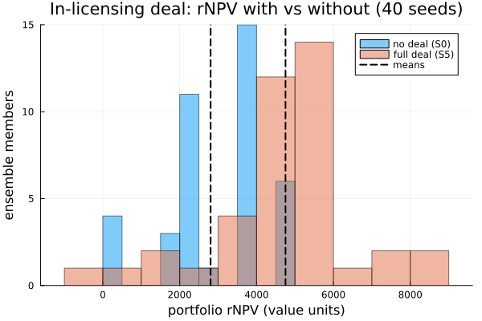

What is this in-licensing asset worth to this pipeline?
The answer, up front. A late-stage asset we can in-license is not worth a number we look up in isolation and add to our balance sheet. Its worth is a system effect on the programs we already own: it competes for the same scientists and the same cash, and — if the target brings a platform — it raises the odds on our organic programs too. When we run our real pipeline once without the deal and once with it, over a seeded ensemble, the fully-integrated deal is clearly value-accretive: it adds on the order of +1,900 value units of risk-adjusted NPV, net of the acquisition price, at a standard error several times smaller than the effect. The non-obvious part is the second-order read: rNPV is not additive under contention. The full deal is worth materially more than the sum of its synergies priced one at a time, and the single largest lever is the platform lifting the success probability of programs already in our pipeline — not the acquired programs themselves. The value is in the platform, not the pipeline.
We build that answer here from a living portfolio: structured-token programs advancing through a timed, resource-contended pipeline, with the acquisition itself expressed as an in-model rule that fires once. Everything below runs at build time from an explicit seed. (We run a modest ensemble here so the page builds quickly; the full study — demo/bd_acquisition — runs 160 seeds, which is what it takes to resolve the fine ranking of the individual synergies.)
The underlying semantics — structured tokens, the endogenous decision channel, resource modalities, the per-program ledger — are specified in the normative operational-semantics contract; here we use them.
using ReactiveDynamics
using ReactiveDynamics: ReactionNetworkProblem, register_token_kind!,
Rule, Seq, SetMarking, SetParams, AddToken, get_place, inners, getagent, program_ledger
using Random, Distributions, DataFrames, Statistics, Printf
using Plots
const RD = ReactiveDynamicsReactiveDynamics1. The pipeline, the asset, and the acquisition lever
A program is a structured token. Each asset carries identity across its whole lifecycle: its phase (Discovery → Phase1 → Phase2 → Phase3 → Filed → Market) is an attribute, not a separate place, so one ProjectToken kind represents every program and we advance it in place. The other fields are what the valuation reads — peak sales value, remaining probability of success, and whether it arrived organically or via the deal. The kind is host Julia (never serialized): we define it into the ReactiveDynamics module with the @register / @aagent idiom, so the engine's bind/advance machinery can see the type, and refer to it afterwards as RD.ProjectToken.
@register begin
@aagent BaseStructuredToken AbstractStructuredToken struct ProjectToken
phase::Symbol
npv_peak::Float64 # peak sales value if it reaches market
pos_remaining::Float64 # cumulative probability of success from here to market
cost_to_date::Float64 # capital sunk so far
therapeutic_area::Symbol
acquired::Bool # did this program enter via the acquisition?
acq_time::Float64 # NaN if organic
end
using Random: randstring
function ProjectToken(;
phase = :Discovery,
npv_peak = 1000.0,
pos_remaining = 0.1,
therapeutic_area = :onc,
acquired = false,
acq_time = NaN,
)
return ProjectToken(
"Proj" * randstring(8),
:Project,
nothing,
Tuple{Symbol, Float64, ReactiveDynamics.Transition}[],
phase,
npv_peak,
pos_remaining,
0.0,
therapeutic_area,
acquired,
acq_time,
)
end
endReactiveDynamics.ProjectTokenThe acquisition lever injects new programs by name: the model document references a constructor in a per-network registry, so the file itself carries no code. Acquired programs enter at Phase 2, on the same risk scale as our organic ones.
const PROJECT_REGISTRY = Dict{Symbol, Any}(
:ProjectToken => (state, fields) -> RD.ProjectToken(;
phase = get(fields, :phase, :Phase2),
npv_peak = get(fields, :npv_peak, 1200.0),
pos_remaining = get(fields, :pos_remaining, 0.5),
therapeutic_area = get(fields, :therapeutic_area, :onc),
acquired = true,
acq_time = get(fields, :acq_time, state.t),
),
)Dict{Symbol, Any} with 1 entry:
:ProjectToken => #2The probability that a program eventually launches, from a given phase, is the product of the per-phase success probabilities still ahead of it. A Phase-3 program only has to clear Phase3 → Filed → Market, so it carries far more remaining value than a Discovery program — the risk scale both the organic portfolio and the acquired assets are placed on.
const PHASES = [:Discovery, :Phase1, :Phase2, :Phase3, :Filed, :Market]
const PHASE_POS = Dict(
:Discovery => 0.45, :Phase1 => 0.6, :Phase2 => 0.4, :Phase3 => 0.65, :Filed => 0.9,
)
function pos_from_phase(ph)
idx = findfirst(==(ph), PHASES)
idx === nothing && return 1.0
return prod(get(PHASE_POS, p, 1.0) for p in PHASES[idx:end])
endpos_from_phase (generic function with 1 method)The pipeline itself. One @select/@advance transition per phase boundary: select an in-phase program, hold scientist headcount (@conserved, returned on completion) and burn budget (@rate), and on a Binomial success draw advance the program to the next phase; failures soft-retire it. A steady financing inflow tops up the cash reserve each tick. Two synergy parameters — a capability lift on late-phase success probability and an operational-efficiency cut to late-phase cycle time — sit in the transition expressions at zero, waiting for the deal to switch them on. The pools are calibrated so cash genuinely binds: the organic pipeline runs budget down to its floor, so the priority allocator is rationing a scarce resource rather than idling on a slack model. That is what makes the deal's value a contention effect and not a bookkeeping sum.
function build_pipeline_model(; synergy_pos = 0, synergy_eff = 0)
net = @reaction_network begin
@deterministic(2.0),
@select(Project, phase == :Discovery) + 2 * @conserved(scientist) + 2 * @rate(budget) -->
@advance(phase, :Phase1),
name => adv_discovery, cycletime => 1.0, probability => 0.45, priority => 1.0
@deterministic(2.0),
@select(Project, phase == :Phase1) + 3 * @conserved(scientist) + 3 * @rate(budget) -->
@advance(phase, :Phase2),
name => adv_phase1, cycletime => 1.5, probability => 0.6, priority => 1.5
@deterministic(2.0),
@select(Project, phase == :Phase2) + 4 * @conserved(scientist) + 5 * @rate(budget) -->
@advance(phase, :Phase3),
name => adv_phase2, cycletime => 2.0 - 0.5 * synergy_eff,
probability => 0.4 + 0.2 * synergy_pos, priority => 2.0
@deterministic(2.0),
@select(Project, phase == :Phase3) + 5 * @conserved(scientist) + 8 * @rate(budget) -->
@advance(phase, :Filed),
name => adv_phase3, cycletime => 3.0 - 1.0 * synergy_eff,
probability => 0.65 + 0.15 * synergy_pos, priority => 3.0
@deterministic(2.0),
@select(Project, phase == :Filed) + 1 * @conserved(scientist) + 2 * @rate(budget) -->
@advance(phase, :Market),
name => adv_filed, cycletime => 1.0, probability => 0.9, priority => 4.0
@deterministic(16.0), ∅ --> budget, name => financing
end
register_token_kind!(net, :Project)
@prob_init net scientist = 40 budget = 150
@prob_params net synergy_pos = 0 synergy_eff = 0
RD.set_params!(net, Dict(:synergy_pos => synergy_pos, :synergy_eff => synergy_eff))
# Price the budget burn at 1 currency/unit so the engine's per-program ledger attributes each
# program's capital spend during the run. This touches only the ledger rows, never the dynamics —
# the trajectory, the pools, and the Δ-rNPV are exactly as they would be without it.
bi = findfirst(==(:budget), net[:, :placeName])
net[bi, :placeCost] = 1.0
return net
endbuild_pipeline_model (generic function with 1 method)The starting portfolio is declarative: an explicit list of ProjectTokens across phases, passed to the constructor and instantiated before t = 0, so a structured run is reproducible from (model, population, seed).
const ORGANIC_PORTFOLIO = [
(:Discovery, 800.0, :onc),
(:Discovery, 600.0, :immuno),
(:Phase1, 1000.0, :onc),
(:Phase1, 900.0, :cns),
(:Phase2, 1500.0, :onc),
(:Phase2, 1200.0, :immuno),
(:Phase3, 2000.0, :onc),
]
initial_population() = [
RD.ProjectToken(;
phase = ph, npv_peak = npv, pos_remaining = pos_from_phase(ph),
therapeutic_area = area, acquired = false,
) for (ph, npv, area) in ORGANIC_PORTFOLIO
]initial_population (generic function with 1 method)The acquisition is a rule, in the model. It fires once, at the first tick past T_acq, and its action is a sequence: inject the acquired Phase-2 programs, optionally bump the resource pools (the target brings headcount and capital), and optionally flip the capability / efficiency synergy params. A "scenario" is simply which of those levers the rule arms — nothing about the pipeline changes. This is the endogenous decision channel: the deal is serializable model data, not host patch code.
function acquisition_rule(;
T_acq = 8.0, n_programs = 3, extra_scientists = 0, extra_budget = 0,
synergy_pos = false, synergy_eff = false
)
actions = RD.ActionStmt[]
for _ in 1:n_programs
push!(
actions,
AddToken(
:ProjectToken, [
:phase => QuoteNode(:Phase2),
:npv_peak => 1400.0,
:pos_remaining => pos_from_phase(:Phase2),
]
),
)
end
extra_scientists > 0 && push!(actions, SetMarking(:scientist, extra_scientists, :inc))
extra_budget > 0 && push!(actions, SetMarking(:budget, extra_budget, :inc))
(synergy_pos || synergy_eff) && push!(
actions,
SetParams([:synergy_pos => (synergy_pos ? 1 : 0), :synergy_eff => (synergy_eff ? 1 : 0)]),
)
return Rule(:acquisition, :(@t() > $T_acq), Seq(actions); fire_mode = :once)
endacquisition_rule (generic function with 1 method)One scenario, one seed: build the pipeline, seed the run, and — unless this is the no-deal baseline — arm the acquisition rule with the synergies that scenario turns on. The six scenarios are the standard BD grid: no deal (S0); the deal with programs only (S1); plus resource (S2), plus capability/PoS (S3), plus operational-efficiency (S4), and the fully-integrated deal with all four (S5).
function run_scenario(scenario::Symbol, seed; tspan = 40.0, T_acq = 8.0)
net = build_pipeline_model()
prob = ReactionNetworkProblem(
net; tspan = tspan, dt = 1.0, seed = seed,
registry = PROJECT_REGISTRY, population = initial_population(),
)
if scenario != :S0
res = scenario in (:S2, :S5)
pos = scenario in (:S3, :S5)
eff = scenario in (:S4, :S5)
push!(
prob.rules,
acquisition_rule(;
T_acq = T_acq, n_programs = 3,
extra_scientists = res ? 15 : 0, extra_budget = res ? 250 : 0,
synergy_pos = pos, synergy_eff = eff,
),
)
end
simulate(prob)
return prob
endrun_scenario (generic function with 1 method)2. Reading portfolio value off a finished run
The engine does no discounting — that is a modeling choice we make in post, over the final token population. A program that reached market has realized its peak value; an in-flight program is worth its remaining probability of success times its peak, discounted for the expected years still to launch. Portfolio rNPV is the sum, net of what we paid for the deal.
const YEARS_TO_MARKET = Dict(
:Discovery => 9.0, :Phase1 => 7.0, :Phase2 => 5.0, :Phase3 => 3.0, :Filed => 1.0, :Market => 0.0,
)
tokens(prob) = collect(values(inners(getagent(prob, "structured"))))
is_active(t) = get_place(t) != :removed
reached_market(t) = t.phase == :Market
function portfolio_rnpv(prob; discount = 0.1, acq_price = 0.0)
gross = 0.0
for t in tokens(prob)
is_active(t) || continue
if reached_market(t)
gross += t.npv_peak
else
ttm = get(YEARS_TO_MARKET, t.phase, 8.0)
gross += t.pos_remaining * t.npv_peak / (1 + discount)^ttm
end
end
return gross - acq_price
endportfolio_rnpv (generic function with 1 method)The per-run scalars we compare across scenarios: rNPV (netting the price), launches, whether at least one program reached market, and — the tell for contention — the low-water mark of the cash reserve, the lowest budget ever fell to. A value near its floor means cash was binding.
m_rnpv(acq_price) = prob -> portfolio_rnpv(prob; acq_price = acq_price)
m_launches(prob) = count(reached_market, tokens(prob))
m_p_launch(prob) = m_launches(prob) >= 1 ? 1.0 : 0.0
m_cash_trough(prob) = minimum(prob.sol[!, "budget"])m_cash_trough (generic function with 1 method)3. With and without the deal: the attributable Δ-rNPV
The counterfactual is the whole method. We hold the pipeline, the seeds, and the starting portfolio fixed, and run each scenario as a seeded ensemble: member k derives its seed from a single root seed so the runs are reproducible and independent across scenarios. treatment_effect then reports the difference of ensemble means with its unpaired standard error. (We keep the ensemble modest — 40 seeds — so the page builds in about a minute; the full study runs 160, which is what tightens the SE enough to rank the individual synergies.)
const ACQ_PRICE = 400.0
const NSEED = 40
const ROOT_SEED = 2026
scenario_ensemble(scenario) = ensemble(
seed -> run_scenario(scenario, seed); nseed = NSEED, root_seed = ROOT_SEED,
)
scenarios = [:S0, :S1, :S2, :S3, :S4, :S5]
ens = Dict(s => scenario_ensemble(s) for s in scenarios)
base = ens[:S0]agent ensemble with uuid 43266abb of type EnsembleProblem
custom properties:
members: ReactionNetworkProblem[ReactionNetworkProblem{name=member_1, uuid=63032c75, parent=EnsembleProblem{name=ensemble, uuid=43266abb, parent=nothing}}, ReactionNetworkProblem{name=member_2, uuid=e6972f70, parent=EnsembleProblem{name=ensemble, uuid=43266abb, parent=nothing}}, ReactionNetworkProblem{name=member_3, uuid=aca4c053, parent=EnsembleProblem{name=ensemble, uuid=43266abb, parent=nothing}}, ReactionNetworkProblem{name=member_4, uuid=7ab8a93c, parent=EnsembleProblem{name=ensemble, uuid=43266abb, parent=nothing}}, ReactionNetworkProblem{name=member_5, uuid=01107a34, parent=EnsembleProblem{name=ensemble, uuid=43266abb, parent=nothing}}, ReactionNetworkProblem{name=member_6, uuid=d1cfcb6e, parent=EnsembleProblem{name=ensemble, uuid=43266abb, parent=nothing}}, ReactionNetworkProblem{name=member_7, uuid=fdc44689, parent=EnsembleProblem{name=ensemble, uuid=43266abb, parent=nothing}}, ReactionNetworkProblem{name=member_8, uuid=49a5ffca, parent=EnsembleProblem{name=ensemble, uuid=43266abb, parent=nothing}}, ReactionNetworkProblem{name=member_9, uuid=9079ae4f, parent=EnsembleProblem{name=ensemble, uuid=43266abb, parent=nothing}}, ReactionNetworkProblem{name=member_10, uuid=e0cec158, parent=EnsembleProblem{name=ensemble, uuid=43266abb, parent=nothing}} … ReactionNetworkProblem{name=member_31, uuid=00028cc4, parent=EnsembleProblem{name=ensemble, uuid=43266abb, parent=nothing}}, ReactionNetworkProblem{name=member_32, uuid=a159892a, parent=EnsembleProblem{name=ensemble, uuid=43266abb, parent=nothing}}, ReactionNetworkProblem{name=member_33, uuid=789b8e16, parent=EnsembleProblem{name=ensemble, uuid=43266abb, parent=nothing}}, ReactionNetworkProblem{name=member_34, uuid=89fa317b, parent=EnsembleProblem{name=ensemble, uuid=43266abb, parent=nothing}}, ReactionNetworkProblem{name=member_35, uuid=df684246, parent=EnsembleProblem{name=ensemble, uuid=43266abb, parent=nothing}}, ReactionNetworkProblem{name=member_36, uuid=431cdcd8, parent=EnsembleProblem{name=ensemble, uuid=43266abb, parent=nothing}}, ReactionNetworkProblem{name=member_37, uuid=53271430, parent=EnsembleProblem{name=ensemble, uuid=43266abb, parent=nothing}}, ReactionNetworkProblem{name=member_38, uuid=207bd26d, parent=EnsembleProblem{name=ensemble, uuid=43266abb, parent=nothing}}, ReactionNetworkProblem{name=member_39, uuid=bc34d9ff, parent=EnsembleProblem{name=ensemble, uuid=43266abb, parent=nothing}}, ReactionNetworkProblem{name=member_40, uuid=12fa2e92, parent=EnsembleProblem{name=ensemble, uuid=43266abb, parent=nothing}}]
seeds: UInt64[0x93bfd7f82be04142, 0x8060437705211850, 0x6cffb3515e5ff815, 0x59a0ddcb37a24d19, 0x46400f8c90e0b0ac, 0x32e177e96a238176, 0x1f8066e7c3615f83, 0x0c228ec39ca5af4b, 0xf8c1230975e2d7e7, 0xe560d1344f22344d … 0x4e89f5d621747ee7, 0x3b2c53987ab93a7c, 0x27cd1ed3d3fad103, 0x146c80f82d39955c, 0x010cb2150679f7a6, 0xeda68e105fadafad, 0xda4669d438ed6745, 0xc6e7546e922f3c8a, 0xb38686676b6da08c, 0xa028b28a44b1f8e2]
root_seed: 2026
mode: rebuild
inner agents:
agent member_12 with uuid 8819f955 of type ReactionNetworkProblem
custom properties:
network: ReactiveDynamics.ReactionNetwork(Dict(:T => 6, :P => 2, :M => 0, :obs => 0, :S => 3, :E => 0), (placeName = ReactiveDynamics.AttrColumn{Symbol}([:Project, :scientist, :budget], Bool[1, 1, 1]), placeModality = ReactiveDynamics.AttrColumn{Set{Symbol}}(Set{Symbol}[Set(), Set(), Set()], Bool[1, 1, 1]), placeInitVal = ReactiveDynamics.AttrColumn{Union{Float64, Int64, AbstractString, Expr, Function, Symbol}}(Union{Float64, Int64, AbstractString, Expr, Function, Symbol}[0.0, 40, 150], Bool[1, 1, 1]), placeInitUncertainty = ReactiveDynamics.AttrColumn{Union{Float64, Int64, AbstractString, Expr, Function, Symbol}}(Union{Float64, Int64, AbstractString, Expr, Function, Symbol}[0.0, 0.0, 0.0], Bool[1, 1, 1]), placeCost = ReactiveDynamics.AttrColumn{Union{Float64, Int64, AbstractString, Expr, Function, Symbol}}(Union{Float64, Int64, AbstractString, Expr, Function, Symbol}[0.0, 0.0, 1.0], Bool[1, 1, 1]), placeReward = ReactiveDynamics.AttrColumn{Union{Float64, Int64, AbstractString, Expr, Function, Symbol}}(Union{Float64, Int64, AbstractString, Expr, Function, Symbol}[0.0, 0.0, 0.0], Bool[1, 1, 1]), placeValuation = ReactiveDynamics.AttrColumn{Union{Float64, Int64, AbstractString, Expr, Function, Symbol}}(Union{Float64, Int64, AbstractString, Expr, Function, Symbol}[0.0, 0.0, 0.0], Bool[1, 1, 1]), placeStructured = ReactiveDynamics.AttrColumn{Bool}(Bool[1, 0, 0], Bool[1, 1, 1]), placeRole = ReactiveDynamics.AttrColumn{Symbol}([:private, :private, :private], Bool[1, 1, 1]), trans = ReactiveDynamics.AttrColumn{Union{Float64, Int64, AbstractString, Expr, Function, Symbol}}(Union{Float64, Int64, AbstractString, Expr, Function, Symbol}[:(@select(Project, phase == :Discovery) + 2 * @conserved(scientist) + 2 * @rate(budget) → @advance(phase, :Phase1)), :(@select(Project, phase == :Phase1) + 3 * @conserved(scientist) + 3 * @rate(budget) → @advance(phase, :Phase2)), :(@select(Project, phase == :Phase2) + 4 * @conserved(scientist) + 5 * @rate(budget) → @advance(phase, :Phase3)), :(@select(Project, phase == :Phase3) + 5 * @conserved(scientist) + 8 * @rate(budget) → @advance(phase, :Filed)), :(@select(Project, phase == :Filed) + 1 * @conserved(scientist) + 2 * @rate(budget) → @advance(phase, :Market)), :(∅ → budget)], Bool[1, 1, 1, 1, 1, 1]), transPriority = ReactiveDynamics.AttrColumn{Union{Float64, Int64, AbstractString, Expr, Function, Symbol}}(Union{Float64, Int64, AbstractString, Expr, Function, Symbol}[1.0, 1.5, 2.0, 3.0, 4.0, 1], Bool[1, 1, 1, 1, 1, 1]), transRate = ReactiveDynamics.AttrColumn{Union{Float64, Int64, AbstractString, Expr, Function, Symbol}}(Union{Float64, Int64, AbstractString, Expr, Function, Symbol}[2.0, 2.0, 2.0, 2.0, 2.0, 16.0], Bool[1, 1, 1, 1, 1, 1]), transCycleTime = ReactiveDynamics.AttrColumn{Union{Float64, Int64, AbstractString, Expr, Function, Symbol}}(Union{Float64, Int64, AbstractString, Expr, Function, Symbol}[1.0, 1.5, :(2.0 - 0.5synergy_eff), :(3.0 - 1.0synergy_eff), 1.0, 0.0], Bool[1, 1, 1, 1, 1, 1]), transProbOfSuccess = ReactiveDynamics.AttrColumn{Union{Float64, Int64, AbstractString, Expr, Function, Symbol}}(Union{Float64, Int64, AbstractString, Expr, Function, Symbol}[0.45, 0.6, :(0.4 + 0.2synergy_pos), :(0.65 + 0.15synergy_pos), 0.9, 1], Bool[1, 1, 1, 1, 1, 1]), transCapacity = ReactiveDynamics.AttrColumn{Union{Float64, Int64, AbstractString, Expr, Function, Symbol}}(Union{Float64, Int64, AbstractString, Expr, Function, Symbol}[Inf, Inf, Inf, Inf, Inf, Inf], Bool[1, 1, 1, 1, 1, 1]), transMaxLifeTime = ReactiveDynamics.AttrColumn{Union{Float64, Int64, AbstractString, Expr, Function, Symbol}}(Union{Float64, Int64, AbstractString, Expr, Function, Symbol}[Inf, Inf, Inf, Inf, Inf, Inf], Bool[1, 1, 1, 1, 1, 1]), transPreAction = ReactiveDynamics.AttrColumn{Union{Float64, Int64, AbstractString, Expr, Function, Symbol}}(Union{Float64, Int64, AbstractString, Expr, Function, Symbol}[:(()), :(()), :(()), :(()), :(()), :(())], Bool[1, 1, 1, 1, 1, 1]), transPostAction = ReactiveDynamics.AttrColumn{Union{Float64, Int64, AbstractString, Expr, Function, Symbol}}(Union{Float64, Int64, AbstractString, Expr, Function, Symbol}[:(()), :(()), :(()), :(()), :(()), :(())], Bool[1, 1, 1, 1, 1, 1]), transMultiplier = ReactiveDynamics.AttrColumn{Union{Float64, Int64, AbstractString, Expr, Function, Symbol}}(Union{Float64, Int64, AbstractString, Expr, Function, Symbol}[1, 1, 1, 1, 1, 1], Bool[1, 1, 1, 1, 1, 1]), transName = ReactiveDynamics.AttrColumn{Union{Missing, String, Symbol}}(Union{Missing, String, Symbol}[:adv_discovery, :adv_phase1, :adv_phase2, :adv_phase3, :adv_filed, :financing], Bool[1, 1, 1, 1, 1, 1]), eventTrigger = ReactiveDynamics.AttrColumn{Union{Float64, Int64, AbstractString, Expr, Function, Symbol}}(Union{Float64, Int64, AbstractString, Expr, Function, Symbol}[], Bool[]), eventAction = ReactiveDynamics.AttrColumn{Union{Float64, Int64, AbstractString, Expr, Function, Symbol}}(Union{Float64, Int64, AbstractString, Expr, Function, Symbol}[], Bool[]), obsName = ReactiveDynamics.AttrColumn{Symbol}(Symbol[], Bool[]), obsOpts = ReactiveDynamics.AttrColumn{ReactiveDynamics.FoldedObservable}(ReactiveDynamics.FoldedObservable[], Bool[]), prmName = ReactiveDynamics.AttrColumn{Symbol}([:synergy_eff, :synergy_pos], Bool[1, 1]), prmVal = ReactiveDynamics.AttrColumn{Any}(Any[0, 0], Bool[1, 1]), metaKeyword = ReactiveDynamics.AttrColumn{Symbol}(Symbol[], Bool[]), metaVal = ReactiveDynamics.AttrColumn{Union{Float64, Int64, AbstractString, Expr, Function, Symbol}}(Union{Float64, Int64, AbstractString, Expr, Function, Symbol}[], Bool[])), ArcSpec[])
attrs: Dict{Symbol, Vector}(:obsOpts => Any[], :metaKeyword => Any[], :placeReward => [0.0, 0.0, 0.0], :placeInitVal => Real[0.0, 40, 150], :placeModality => Set{Symbol}[Set(), Set(), Set()], :eventAction => Any[], :placeName => [:Project, :scientist, :budget], :placeInitUncertainty => [0.0, 0.0, 0.0], :placeRole => [:private, :private, :private], :prmVal => [0, 0]…)
transition_recipes: Dict{Symbol, Vector}(:transCapacity => [Inf, Inf, Inf, Inf, Inf, Inf], :transPriority => Real[1.0, 1.5, 2.0, 3.0, 4.0, 1], :transActivated => Bool[1, 1, 1, 1, 1, 1], :transGuard => Any[true, true, true, true, true, true], :transMaxLifeTime => [Inf, Inf, Inf, Inf, Inf, Inf], :transName => [:adv_discovery, :adv_phase1, :adv_phase2, :adv_phase3, :adv_filed, :financing], :transMultiplier => [1, 1, 1, 1, 1, 1], :transToSpawn => [0.0, 0.0, 0.0, 0.0, 0.0, 0.0], :trans => Expr[:(@select(Project, phase == :Discovery) + 2 * @conserved(scientist) + 2 * @rate(budget) → @advance(phase, :Phase1)), :(@select(Project, phase == :Phase1) + 3 * @conserved(scientist) + 3 * @rate(budget) → @advance(phase, :Phase2)), :(@select(Project, phase == :Phase2) + 4 * @conserved(scientist) + 5 * @rate(budget) → @advance(phase, :Phase3)), :(@select(Project, phase == :Phase3) + 5 * @conserved(scientist) + 8 * @rate(budget) → @advance(phase, :Filed)), :(@select(Project, phase == :Filed) + 1 * @conserved(scientist) + 2 * @rate(budget) → @advance(phase, :Market)), :(∅ → budget)], :transProbOfSuccess => Any[0.45, 0.6, ReactiveDynamics.var"#7847#7848"(), ReactiveDynamics.var"#7850#7851"(), 0.9, 1]…)
u: [2.0, 5.0, 16.0]
p: Dict{Any, Any}(:synergy_eff => 0, :synergy_pos => 0)
t: 41.0
structured_token: [:Project]
tspan: (0.0, 40.0)
dt: 1.0
transitions: Dict{Symbol, Vector}(:transLHS => Any[Any[ReactiveDynamics.UnfoldedArc(1, :Project, 1.0, Set{Symbol}(), ReactiveDynamics.TokenPredicate(:Project, ReactiveDynamics.Clause[ReactiveDynamics.Clause(:phase, :(==), :(:Discovery))])), ReactiveDynamics.UnfoldedArc(2, :scientist, 2.0, Set([:conserved]), nothing), ReactiveDynamics.UnfoldedArc(3, :budget, 2.0, Set([:rate]), nothing)], Any[ReactiveDynamics.UnfoldedArc(1, :Project, 1.0, Set{Symbol}(), ReactiveDynamics.TokenPredicate(:Project, ReactiveDynamics.Clause[ReactiveDynamics.Clause(:phase, :(==), :(:Phase1))])), ReactiveDynamics.UnfoldedArc(2, :scientist, 3.0, Set([:conserved]), nothing), ReactiveDynamics.UnfoldedArc(3, :budget, 3.0, Set([:rate]), nothing)], Any[ReactiveDynamics.UnfoldedArc(1, :Project, 1.0, Set{Symbol}(), ReactiveDynamics.TokenPredicate(:Project, ReactiveDynamics.Clause[ReactiveDynamics.Clause(:phase, :(==), :(:Phase2))])), ReactiveDynamics.UnfoldedArc(2, :scientist, 4.0, Set([:conserved]), nothing), ReactiveDynamics.UnfoldedArc(3, :budget, 5.0, Set([:rate]), nothing)], Any[ReactiveDynamics.UnfoldedArc(1, :Project, 1.0, Set{Symbol}(), ReactiveDynamics.TokenPredicate(:Project, ReactiveDynamics.Clause[ReactiveDynamics.Clause(:phase, :(==), :(:Phase3))])), ReactiveDynamics.UnfoldedArc(2, :scientist, 5.0, Set([:conserved]), nothing), ReactiveDynamics.UnfoldedArc(3, :budget, 8.0, Set([:rate]), nothing)], Any[ReactiveDynamics.UnfoldedArc(1, :Project, 1.0, Set{Symbol}(), ReactiveDynamics.TokenPredicate(:Project, ReactiveDynamics.Clause[ReactiveDynamics.Clause(:phase, :(==), :(:Filed))])), ReactiveDynamics.UnfoldedArc(2, :scientist, 1.0, Set([:conserved]), nothing), ReactiveDynamics.UnfoldedArc(3, :budget, 2.0, Set([:rate]), nothing)], Any[]], :transCapacity => Any[Inf, Inf, Inf, Inf, Inf, Inf], :transToSpawn => Any[0.0, 0.0, 0.0, 0.0, 0.0, 0.0, 0.0, 0.0, 0.0, 0.0, 0.0, 0.0], :transPriority => Any[1.0, 1.5, 2.0, 3.0, 4.0, 1], :transFiring => Any[true, true, true, true, true, true], :transProbOfSuccess => Any[0.45, 0.6, 0.4, 0.65, 0.9, 1], :transRHS => Any[:(@advance phase :Phase1), :(@advance phase :Phase2), :(@advance phase :Phase3), :(@advance phase :Filed), :(@advance phase :Market), :budget], :transRate => Any[2.0, 2.0, 2.0, 2.0, 2.0, 16.0], :transMaxLifeTime => Any[Inf, Inf, Inf, Inf, Inf, Inf], :transHash => Any[:adv_discovery, :adv_phase1, :adv_phase2, :adv_phase3, :adv_filed, :financing]…)
ongoing_transitions: ReactiveDynamics.Transition[ ReactiveDynamics.Transition{name=adv_phase3_@30.0, uuid=5ded0f07, parent=nothing}, ReactiveDynamics.Transition{name=adv_discovery_@31.0, uuid=9bac8491, parent=nothing}, ReactiveDynamics.Transition{name=adv_phase3_@31.0, uuid=f8c67d36, parent=nothing}, ReactiveDynamics.Transition{name=adv_phase3_@32.0, uuid=918b6d3c, parent=nothing}, ReactiveDynamics.Transition{name=adv_phase3_@33.0, uuid=25c109c3, parent=nothing}, ReactiveDynamics.Transition{name=adv_phase3_@37.0, uuid=ac4cdfc6, parent=nothing}, ReactiveDynamics.Transition{name=adv_phase3_@38.0, uuid=4c097cec, parent=nothing}, ReactiveDynamics.Transition{name=adv_filed_@38.0, uuid=ebe57dc3, parent=nothing}, ReactiveDynamics.Transition{name=adv_filed_@39.0, uuid=0d673681, parent=nothing}, ReactiveDynamics.Transition{name=adv_filed_@40.0, uuid=7cc56c77, parent=nothing}]
log: Tuple[(:new_transitions, 0.0, (:adv_discovery, 0.0), (:adv_phase1, 1.0), (:adv_phase2, 2.0), (:adv_phase3, 2.0), (:adv_filed, 2.0), (:financing, 16.0)), (:saturation, 0.0, (:adv_phase1, 1.0), (:adv_phase2, 1.0), (:adv_phase3, 1.0), (:adv_filed, 1.0), (:financing, 1.0)), (:allocation, 0.0, [7.0, 23.0, 33.0]), (:valuation_cost, 0.0, 33.0), (:terminated_all, 0.0, :adv_filed => 2.0, :financing => 16.0), (:terminated_success, 0.0, :adv_filed => 2.0, :financing => 16.0), (:valuation_reward, 0.0, 0.0), (:valuation, 0.0, 0.0), (:program_ledger, 0.0, Dict("ProjBD4Cbh6m" => (cost = 0.0, reward = 0.0, valuation = 0.0), "ProjlyeWPiQj" => (cost = 5.0, reward = 0.0, valuation = 0.0), "ProjoKrHs161" => (cost = 5.0, reward = 0.0, valuation = 0.0), "ProjCfoulloo" => (cost = 0.0, reward = 0.0, valuation = 0.0), "ProjScnOqbsH" => (cost = 0.0, reward = 0.0, valuation = 0.0), "ProjNURUIUvt" => (cost = 16.0, reward = 0.0, valuation = 0.0), "ProjcPptQqAe" => (cost = 3.0, reward = 0.0, valuation = 0.0))), (:new_transitions, 1.0, (:adv_discovery, 0.0), (:adv_phase1, 0.0), (:adv_phase2, 0.0), (:adv_phase3, 1.0), (:adv_filed, 2.0), (:financing, 16.0)) … (:program_ledger, 39.0, Dict("ProjBD4Cbh6m" => (cost = 15.602628308555822, reward = 0.0, valuation = 0.0), "ProjlyeWPiQj" => (cost = 10.0, reward = 0.0, valuation = 0.0), "ProjoKrHs161" => (cost = 62.311361804995975, reward = 0.0, valuation = 0.0), "ProjCfoulloo" => (cost = 2.112113530509064, reward = 0.0, valuation = 0.0), "ProjScnOqbsH" => (cost = 1.5670368876880791, reward = 0.0, valuation = 0.0), "ProjNURUIUvt" => (cost = 52.0, reward = 0.0, valuation = 0.0), "ProjcPptQqAe" => (cost = 6.0, reward = 0.0, valuation = 0.0))), (:new_transitions, 40.0, (:adv_discovery, 0.0), (:adv_phase1, 0.0), (:adv_phase2, 0.0), (:adv_phase3, 0.0), (:adv_filed, 1.0), (:financing, 16.0)), (:saturation, 40.0, (:adv_phase3, 0.24742268041237114), (:adv_phase3, 0.24742268041237114), (:adv_discovery, 0.08247422680412371), (:adv_phase3, 0.24742268041237114), (:adv_phase3, 0.24742268041237114), (:adv_phase3, 0.24742268041237114), (:adv_phase3, 0.24742268041237114), (:adv_phase3, 0.24742268041237114), (:adv_filed, 0.32989690721649484), (:adv_filed, 0.32989690721649484), (:adv_filed, 0.32989690721649484), (:financing, 1.0)), (:allocation, 40.0, [1.0, 1.0, 15.999999999999998]), (:valuation_cost, 40.0, 15.999999999999998), (:terminated_all, 40.0, :financing => 16.0, :adv_phase3 => 1.0), (:terminated_success, 40.0, :financing => 16.0, :adv_phase3 => 1.0), (:valuation_reward, 40.0, 0.0), (:valuation, 40.0, 0.0), (:program_ledger, 40.0, Dict("ProjBD4Cbh6m" => (cost = 15.602628308555822, reward = 0.0, valuation = 0.0), "ProjlyeWPiQj" => (cost = 10.0, reward = 0.0, valuation = 0.0), "ProjoKrHs161" => (cost = 62.311361804995975, reward = 0.0, valuation = 0.0), "ProjCfoulloo" => (cost = 2.112113530509064, reward = 0.0, valuation = 0.0), "ProjScnOqbsH" => (cost = 1.7319853412963266, reward = 0.0, valuation = 0.0), "ProjNURUIUvt" => (cost = 52.0, reward = 0.0, valuation = 0.0), "ProjcPptQqAe" => (cost = 6.0, reward = 0.0, valuation = 0.0)))]
observables: Dict{Symbol, ReactiveDynamics.Observable}()
wrap_fun: #compile_attrs##2
sol: 42×4 DataFrame
Row │ t Project scientist budget
│ Float64 Float64 Float64 Float64
─────┼──────────────────────────────────────
1 │ 0.0 7.0 40.0 150.0
2 │ 1.0 3.0 19.0 133.0
3 │ 2.0 4.0 25.0 108.0
4 │ 3.0 4.0 25.0 80.0
5 │ 4.0 4.0 20.0 52.0
6 │ 5.0 5.0 20.0 16.0
7 │ 6.0 4.0 4.0 16.0
8 │ 7.0 3.0 0.0 16.0
⋮ │ ⋮ ⋮ ⋮ ⋮
36 │ 35.0 2.0 1.0 16.0
37 │ 36.0 2.0 1.0 16.0
38 │ 37.0 2.0 7.0 16.0
39 │ 38.0 2.0 6.0 16.0
40 │ 39.0 2.0 1.0 16.0
41 │ 40.0 2.0 1.0 16.0
42 │ 41.0 2.0 5.0 16.0
27 rows omitted
rng: Random.Xoshiro(0x67cc2de472e87b3a, 0x7218ebafda53048b, 0xa5d7cb1221e897d7, 0x06f5287fc1f64a23, 0xd0bf2036828b0ddb)
seed: 13737001853850736340
initial_rng: Random.Xoshiro(0xe0536687609d2529, 0x3772bf83f6b58b52, 0x82eb8d5bca38fcb8, 0x3f5a880c9cf49ebc, 0xd0bf2036828b0ddb)
rules: Any[]
registry: Dict{Symbol, Any}(:ProjectToken => Main.var"#2#3"())
creation_counters: Dict(:Project => 7)
creation_index: Dict("ProjBD4Cbh6m" => 4, "ProjlyeWPiQj" => 6, "ProjoKrHs161" => 5, "ProjCfoulloo" => 1, "ProjScnOqbsH" => 2, "ProjNURUIUvt" => 7, "ProjcPptQqAe" => 3)
population: ReactiveDynamics.ProjectToken[ ReactiveDynamics.ProjectToken{name=ProjCfoulloo, uuid=95ccf600, parent=FreeAgent{name=structured, uuid=432cfd03, parent=ReactionNetworkProblem{name=member_12, uuid=8819f955, parent=EnsembleProblem{name=ensemble, uuid=43266abb, parent=nothing}}}}, ReactiveDynamics.ProjectToken{name=ProjScnOqbsH, uuid=cda0dd97, parent=FreeAgent{name=structured, uuid=432cfd03, parent=ReactionNetworkProblem{name=member_12, uuid=8819f955, parent=EnsembleProblem{name=ensemble, uuid=43266abb, parent=nothing}}}}, ReactiveDynamics.ProjectToken{name=ProjcPptQqAe, uuid=98138a35, parent=FreeAgent{name=structured, uuid=432cfd03, parent=ReactionNetworkProblem{name=member_12, uuid=8819f955, parent=EnsembleProblem{name=ensemble, uuid=43266abb, parent=nothing}}}}, ReactiveDynamics.ProjectToken{name=ProjBD4Cbh6m, uuid=02c84a5e, parent=FreeAgent{name=structured, uuid=432cfd03, parent=ReactionNetworkProblem{name=member_12, uuid=8819f955, parent=EnsembleProblem{name=ensemble, uuid=43266abb, parent=nothing}}}}, ReactiveDynamics.ProjectToken{name=ProjoKrHs161, uuid=21ce3390, parent=FreeAgent{name=structured, uuid=432cfd03, parent=ReactionNetworkProblem{name=member_12, uuid=8819f955, parent=EnsembleProblem{name=ensemble, uuid=43266abb, parent=nothing}}}}, ReactiveDynamics.ProjectToken{name=ProjlyeWPiQj, uuid=98e9fd7f, parent=FreeAgent{name=structured, uuid=432cfd03, parent=ReactionNetworkProblem{name=member_12, uuid=8819f955, parent=EnsembleProblem{name=ensemble, uuid=43266abb, parent=nothing}}}}, ReactiveDynamics.ProjectToken{name=ProjNURUIUvt, uuid=2a99afce, parent=FreeAgent{name=structured, uuid=432cfd03, parent=ReactionNetworkProblem{name=member_12, uuid=8819f955, parent=EnsembleProblem{name=ensemble, uuid=43266abb, parent=nothing}}}}]
init_snapshot: Dict{String, Dict{Symbol, Any}}("ProjBD4Cbh6m" => Dict(:phase => :Phase1, :cost_to_date => 0.0, :npv_peak => 900.0, :place => :Project, :pos_remaining => 0.1404, :therapeutic_area => :cns, :acquired => false, :acq_time => NaN), "ProjlyeWPiQj" => Dict(:phase => :Phase2, :cost_to_date => 0.0, :npv_peak => 1200.0, :place => :Project, :pos_remaining => 0.234, :therapeutic_area => :immuno, :acquired => false, :acq_time => NaN), "ProjoKrHs161" => Dict(:phase => :Phase2, :cost_to_date => 0.0, :npv_peak => 1500.0, :place => :Project, :pos_remaining => 0.234, :therapeutic_area => :onc, :acquired => false, :acq_time => NaN), "ProjCfoulloo" => Dict(:phase => :Discovery, :cost_to_date => 0.0, :npv_peak => 800.0, :place => :Project, :pos_remaining => 0.06318000000000001, :therapeutic_area => :onc, :acquired => false, :acq_time => NaN), "ProjScnOqbsH" => Dict(:phase => :Discovery, :cost_to_date => 0.0, :npv_peak => 600.0, :place => :Project, :pos_remaining => 0.06318000000000001, :therapeutic_area => :immuno, :acquired => false, :acq_time => NaN), "ProjNURUIUvt" => Dict(:phase => :Phase3, :cost_to_date => 0.0, :npv_peak => 2000.0, :place => :Project, :pos_remaining => 0.5850000000000001, :therapeutic_area => :onc, :acquired => false, :acq_time => NaN), "ProjcPptQqAe" => Dict(:phase => :Phase1, :cost_to_date => 0.0, :npv_peak => 1000.0, :place => :Project, :pos_remaining => 0.1404, :therapeutic_area => :onc, :acquired => false, :acq_time => NaN))
live: true
program_ledgers: Dict{String, ProgramLedger}("ProjlyeWPiQj" => ProgramLedger(:Project, 6, 10.0, 0.0, 0.0, [(0.0, :cost, 5.0, "adv_phase2_@0.0"), (1.0, :cost, 5.0, "adv_phase2_@0.0")]), "ProjBD4Cbh6m" => ProgramLedger(:Project, 4, 15.602628308555822, 0.0, 0.0, [(6.0, :cost, 0.3945205479452055, "adv_phase1_@6.0"), (7.0, :cost, 0.3945205479452055, "adv_phase1_@6.0"), (8.0, :cost, 0.3945205479452055, "adv_phase1_@6.0"), (9.0, :cost, 0.40793201133144463, "adv_phase1_@6.0"), (10.0, :cost, 0.4079320113314448, "adv_phase1_@6.0"), (11.0, :cost, 0.40793201133144463, "adv_phase1_@6.0"), (12.0, :cost, 0.4079320113314448, "adv_phase1_@6.0"), (13.0, :cost, 0.41618497109826585, "adv_phase1_@6.0"), (14.0, :cost, 0.41618497109826585, "adv_phase1_@6.0"), (15.0, :cost, 0.416184971098266, "adv_phase1_@6.0") … (22.0, :cost, 0.8672086720867209, "adv_phase2_@20.0"), (23.0, :cost, 0.8672086720867209, "adv_phase2_@20.0"), (24.0, :cost, 0.8672086720867209, "adv_phase2_@20.0"), (25.0, :cost, 0.888888888888889, "adv_phase2_@20.0"), (26.0, :cost, 0.8791208791208792, "adv_phase2_@20.0"), (27.0, :cost, 0.8791208791208792, "adv_phase2_@20.0"), (28.0, :cost, 0.8791208791208792, "adv_phase2_@20.0"), (29.0, :cost, 0.963855421686747, "adv_phase2_@20.0"), (30.0, :cost, 0.975609756097561, "adv_phase2_@20.0"), (31.0, :cost, 0.8791208791208792, "adv_phase2_@20.0")]), "ProjoKrHs161" => ProgramLedger(:Project, 5, 62.311361804995975, 0.0, 0.0, [(0.0, :cost, 5.0, "adv_phase2_@0.0"), (1.0, :cost, 5.0, "adv_phase2_@0.0"), (2.0, :cost, 16.0, "adv_phase3_@2.0"), (3.0, :cost, 16.0, "adv_phase3_@2.0"), (4.0, :cost, 16.0, "adv_phase3_@2.0"), (5.0, :cost, 1.5058823529411764, "adv_filed_@5.0"), (6.0, :cost, 1.4027397260273973, "adv_filed_@5.0"), (7.0, :cost, 1.4027397260273973, "adv_filed_@5.0")]), "ProjCfoulloo" => ProgramLedger(:Project, 1, 2.112113530509064, 0.0, 0.0, [(18.0, :cost, 0.17344173441734415, "adv_discovery_@18.0"), (19.0, :cost, 0.17344173441734417, "adv_discovery_@18.0"), (20.0, :cost, 0.17344173441734417, "adv_discovery_@18.0"), (21.0, :cost, 0.17344173441734417, "adv_discovery_@18.0"), (22.0, :cost, 0.17344173441734417, "adv_discovery_@18.0"), (23.0, :cost, 0.17344173441734417, "adv_discovery_@18.0"), (24.0, :cost, 0.17344173441734417, "adv_discovery_@18.0"), (25.0, :cost, 0.17777777777777778, "adv_discovery_@18.0"), (26.0, :cost, 0.17582417582417584, "adv_discovery_@18.0"), (27.0, :cost, 0.17582417582417584, "adv_discovery_@18.0"), (28.0, :cost, 0.17582417582417584, "adv_discovery_@18.0"), (29.0, :cost, 0.1927710843373494, "adv_discovery_@18.0")]), "ProjScnOqbsH" => ProgramLedger(:Project, 2, 1.7319853412963266, 0.0, 0.0, [(31.0, :cost, 0.17582417582417584, "adv_discovery_@31.0"), (32.0, :cost, 0.1951219512195122, "adv_discovery_@31.0"), (33.0, :cost, 0.17777777777777778, "adv_discovery_@31.0"), (34.0, :cost, 0.17021276595744686, "adv_discovery_@31.0"), (35.0, :cost, 0.17021276595744678, "adv_discovery_@31.0"), (36.0, :cost, 0.1702127659574468, "adv_discovery_@31.0"), (37.0, :cost, 0.1777777777777778, "adv_discovery_@31.0"), (38.0, :cost, 0.16494845360824742, "adv_discovery_@31.0"), (39.0, :cost, 0.16494845360824742, "adv_discovery_@31.0"), (40.0, :cost, 0.16494845360824742, "adv_discovery_@31.0")]), "ProjNURUIUvt" => ProgramLedger(:Project, 7, 52.0, 0.0, 0.0, [(0.0, :cost, 16.0, "adv_phase3_@0.0"), (1.0, :cost, 16.0, "adv_phase3_@0.0"), (2.0, :cost, 16.0, "adv_phase3_@0.0"), (3.0, :cost, 4.0, "adv_filed_@3.0")]), "ProjcPptQqAe" => ProgramLedger(:Project, 3, 6.0, 0.0, 0.0, [(0.0, :cost, 3.0, "adv_phase1_@0.0"), (1.0, :cost, 3.0, "adv_phase1_@0.0")]))
unattributed_cost: 640.2419110146415
unattributed_reward: 0.0
external_inputs: Dict{Symbol, Any}()
external_input_defaults: Dict{Symbol, Any}()
token_trajectory: Tuple{Float64, String, Symbol, NamedTuple}[]
inner agents: structured
agent member_10 with uuid e0cec158 of type ReactionNetworkProblem
custom properties:
network: ReactiveDynamics.ReactionNetwork(Dict(:T => 6, :P => 2, :M => 0, :obs => 0, :S => 3, :E => 0), (placeName = ReactiveDynamics.AttrColumn{Symbol}([:Project, :scientist, :budget], Bool[1, 1, 1]), placeModality = ReactiveDynamics.AttrColumn{Set{Symbol}}(Set{Symbol}[Set(), Set(), Set()], Bool[1, 1, 1]), placeInitVal = ReactiveDynamics.AttrColumn{Union{Float64, Int64, AbstractString, Expr, Function, Symbol}}(Union{Float64, Int64, AbstractString, Expr, Function, Symbol}[0.0, 40, 150], Bool[1, 1, 1]), placeInitUncertainty = ReactiveDynamics.AttrColumn{Union{Float64, Int64, AbstractString, Expr, Function, Symbol}}(Union{Float64, Int64, AbstractString, Expr, Function, Symbol}[0.0, 0.0, 0.0], Bool[1, 1, 1]), placeCost = ReactiveDynamics.AttrColumn{Union{Float64, Int64, AbstractString, Expr, Function, Symbol}}(Union{Float64, Int64, AbstractString, Expr, Function, Symbol}[0.0, 0.0, 1.0], Bool[1, 1, 1]), placeReward = ReactiveDynamics.AttrColumn{Union{Float64, Int64, AbstractString, Expr, Function, Symbol}}(Union{Float64, Int64, AbstractString, Expr, Function, Symbol}[0.0, 0.0, 0.0], Bool[1, 1, 1]), placeValuation = ReactiveDynamics.AttrColumn{Union{Float64, Int64, AbstractString, Expr, Function, Symbol}}(Union{Float64, Int64, AbstractString, Expr, Function, Symbol}[0.0, 0.0, 0.0], Bool[1, 1, 1]), placeStructured = ReactiveDynamics.AttrColumn{Bool}(Bool[1, 0, 0], Bool[1, 1, 1]), placeRole = ReactiveDynamics.AttrColumn{Symbol}([:private, :private, :private], Bool[1, 1, 1]), trans = ReactiveDynamics.AttrColumn{Union{Float64, Int64, AbstractString, Expr, Function, Symbol}}(Union{Float64, Int64, AbstractString, Expr, Function, Symbol}[:(@select(Project, phase == :Discovery) + 2 * @conserved(scientist) + 2 * @rate(budget) → @advance(phase, :Phase1)), :(@select(Project, phase == :Phase1) + 3 * @conserved(scientist) + 3 * @rate(budget) → @advance(phase, :Phase2)), :(@select(Project, phase == :Phase2) + 4 * @conserved(scientist) + 5 * @rate(budget) → @advance(phase, :Phase3)), :(@select(Project, phase == :Phase3) + 5 * @conserved(scientist) + 8 * @rate(budget) → @advance(phase, :Filed)), :(@select(Project, phase == :Filed) + 1 * @conserved(scientist) + 2 * @rate(budget) → @advance(phase, :Market)), :(∅ → budget)], Bool[1, 1, 1, 1, 1, 1]), transPriority = ReactiveDynamics.AttrColumn{Union{Float64, Int64, AbstractString, Expr, Function, Symbol}}(Union{Float64, Int64, AbstractString, Expr, Function, Symbol}[1.0, 1.5, 2.0, 3.0, 4.0, 1], Bool[1, 1, 1, 1, 1, 1]), transRate = ReactiveDynamics.AttrColumn{Union{Float64, Int64, AbstractString, Expr, Function, Symbol}}(Union{Float64, Int64, AbstractString, Expr, Function, Symbol}[2.0, 2.0, 2.0, 2.0, 2.0, 16.0], Bool[1, 1, 1, 1, 1, 1]), transCycleTime = ReactiveDynamics.AttrColumn{Union{Float64, Int64, AbstractString, Expr, Function, Symbol}}(Union{Float64, Int64, AbstractString, Expr, Function, Symbol}[1.0, 1.5, :(2.0 - 0.5synergy_eff), :(3.0 - 1.0synergy_eff), 1.0, 0.0], Bool[1, 1, 1, 1, 1, 1]), transProbOfSuccess = ReactiveDynamics.AttrColumn{Union{Float64, Int64, AbstractString, Expr, Function, Symbol}}(Union{Float64, Int64, AbstractString, Expr, Function, Symbol}[0.45, 0.6, :(0.4 + 0.2synergy_pos), :(0.65 + 0.15synergy_pos), 0.9, 1], Bool[1, 1, 1, 1, 1, 1]), transCapacity = ReactiveDynamics.AttrColumn{Union{Float64, Int64, AbstractString, Expr, Function, Symbol}}(Union{Float64, Int64, AbstractString, Expr, Function, Symbol}[Inf, Inf, Inf, Inf, Inf, Inf], Bool[1, 1, 1, 1, 1, 1]), transMaxLifeTime = ReactiveDynamics.AttrColumn{Union{Float64, Int64, AbstractString, Expr, Function, Symbol}}(Union{Float64, Int64, AbstractString, Expr, Function, Symbol}[Inf, Inf, Inf, Inf, Inf, Inf], Bool[1, 1, 1, 1, 1, 1]), transPreAction = ReactiveDynamics.AttrColumn{Union{Float64, Int64, AbstractString, Expr, Function, Symbol}}(Union{Float64, Int64, AbstractString, Expr, Function, Symbol}[:(()), :(()), :(()), :(()), :(()), :(())], Bool[1, 1, 1, 1, 1, 1]), transPostAction = ReactiveDynamics.AttrColumn{Union{Float64, Int64, AbstractString, Expr, Function, Symbol}}(Union{Float64, Int64, AbstractString, Expr, Function, Symbol}[:(()), :(()), :(()), :(()), :(()), :(())], Bool[1, 1, 1, 1, 1, 1]), transMultiplier = ReactiveDynamics.AttrColumn{Union{Float64, Int64, AbstractString, Expr, Function, Symbol}}(Union{Float64, Int64, AbstractString, Expr, Function, Symbol}[1, 1, 1, 1, 1, 1], Bool[1, 1, 1, 1, 1, 1]), transName = ReactiveDynamics.AttrColumn{Union{Missing, String, Symbol}}(Union{Missing, String, Symbol}[:adv_discovery, :adv_phase1, :adv_phase2, :adv_phase3, :adv_filed, :financing], Bool[1, 1, 1, 1, 1, 1]), eventTrigger = ReactiveDynamics.AttrColumn{Union{Float64, Int64, AbstractString, Expr, Function, Symbol}}(Union{Float64, Int64, AbstractString, Expr, Function, Symbol}[], Bool[]), eventAction = ReactiveDynamics.AttrColumn{Union{Float64, Int64, AbstractString, Expr, Function, Symbol}}(Union{Float64, Int64, AbstractString, Expr, Function, Symbol}[], Bool[]), obsName = ReactiveDynamics.AttrColumn{Symbol}(Symbol[], Bool[]), obsOpts = ReactiveDynamics.AttrColumn{ReactiveDynamics.FoldedObservable}(ReactiveDynamics.FoldedObservable[], Bool[]), prmName = ReactiveDynamics.AttrColumn{Symbol}([:synergy_eff, :synergy_pos], Bool[1, 1]), prmVal = ReactiveDynamics.AttrColumn{Any}(Any[0, 0], Bool[1, 1]), metaKeyword = ReactiveDynamics.AttrColumn{Symbol}(Symbol[], Bool[]), metaVal = ReactiveDynamics.AttrColumn{Union{Float64, Int64, AbstractString, Expr, Function, Symbol}}(Union{Float64, Int64, AbstractString, Expr, Function, Symbol}[], Bool[])), ArcSpec[])
attrs: Dict{Symbol, Vector}(:obsOpts => Any[], :metaKeyword => Any[], :placeReward => [0.0, 0.0, 0.0], :placeInitVal => Real[0.0, 40, 150], :placeModality => Set{Symbol}[Set(), Set(), Set()], :eventAction => Any[], :placeName => [:Project, :scientist, :budget], :placeInitUncertainty => [0.0, 0.0, 0.0], :placeRole => [:private, :private, :private], :prmVal => [0, 0]…)
transition_recipes: Dict{Symbol, Vector}(:transCapacity => [Inf, Inf, Inf, Inf, Inf, Inf], :transPriority => Real[1.0, 1.5, 2.0, 3.0, 4.0, 1], :transActivated => Bool[1, 1, 1, 1, 1, 1], :transGuard => Any[true, true, true, true, true, true], :transMaxLifeTime => [Inf, Inf, Inf, Inf, Inf, Inf], :transName => [:adv_discovery, :adv_phase1, :adv_phase2, :adv_phase3, :adv_filed, :financing], :transMultiplier => [1, 1, 1, 1, 1, 1], :transToSpawn => [0.0, 0.0, 0.0, 0.0, 0.0, 0.0], :trans => Expr[:(@select(Project, phase == :Discovery) + 2 * @conserved(scientist) + 2 * @rate(budget) → @advance(phase, :Phase1)), :(@select(Project, phase == :Phase1) + 3 * @conserved(scientist) + 3 * @rate(budget) → @advance(phase, :Phase2)), :(@select(Project, phase == :Phase2) + 4 * @conserved(scientist) + 5 * @rate(budget) → @advance(phase, :Phase3)), :(@select(Project, phase == :Phase3) + 5 * @conserved(scientist) + 8 * @rate(budget) → @advance(phase, :Filed)), :(@select(Project, phase == :Filed) + 1 * @conserved(scientist) + 2 * @rate(budget) → @advance(phase, :Market)), :(∅ → budget)], :transProbOfSuccess => Any[0.45, 0.6, ReactiveDynamics.var"#6530#6531"(), ReactiveDynamics.var"#6533#6534"(), 0.9, 1]…)
u: [6.0, 10.0, 16.0]
p: Dict{Any, Any}(:synergy_eff => 0, :synergy_pos => 0)
t: 41.0
structured_token: [:Project]
tspan: (0.0, 40.0)
dt: 1.0
transitions: Dict{Symbol, Vector}(:transLHS => Any[Any[ReactiveDynamics.UnfoldedArc(1, :Project, 1.0, Set{Symbol}(), ReactiveDynamics.TokenPredicate(:Project, ReactiveDynamics.Clause[ReactiveDynamics.Clause(:phase, :(==), :(:Discovery))])), ReactiveDynamics.UnfoldedArc(2, :scientist, 2.0, Set([:conserved]), nothing), ReactiveDynamics.UnfoldedArc(3, :budget, 2.0, Set([:rate]), nothing)], Any[ReactiveDynamics.UnfoldedArc(1, :Project, 1.0, Set{Symbol}(), ReactiveDynamics.TokenPredicate(:Project, ReactiveDynamics.Clause[ReactiveDynamics.Clause(:phase, :(==), :(:Phase1))])), ReactiveDynamics.UnfoldedArc(2, :scientist, 3.0, Set([:conserved]), nothing), ReactiveDynamics.UnfoldedArc(3, :budget, 3.0, Set([:rate]), nothing)], Any[ReactiveDynamics.UnfoldedArc(1, :Project, 1.0, Set{Symbol}(), ReactiveDynamics.TokenPredicate(:Project, ReactiveDynamics.Clause[ReactiveDynamics.Clause(:phase, :(==), :(:Phase2))])), ReactiveDynamics.UnfoldedArc(2, :scientist, 4.0, Set([:conserved]), nothing), ReactiveDynamics.UnfoldedArc(3, :budget, 5.0, Set([:rate]), nothing)], Any[ReactiveDynamics.UnfoldedArc(1, :Project, 1.0, Set{Symbol}(), ReactiveDynamics.TokenPredicate(:Project, ReactiveDynamics.Clause[ReactiveDynamics.Clause(:phase, :(==), :(:Phase3))])), ReactiveDynamics.UnfoldedArc(2, :scientist, 5.0, Set([:conserved]), nothing), ReactiveDynamics.UnfoldedArc(3, :budget, 8.0, Set([:rate]), nothing)], Any[ReactiveDynamics.UnfoldedArc(1, :Project, 1.0, Set{Symbol}(), ReactiveDynamics.TokenPredicate(:Project, ReactiveDynamics.Clause[ReactiveDynamics.Clause(:phase, :(==), :(:Filed))])), ReactiveDynamics.UnfoldedArc(2, :scientist, 1.0, Set([:conserved]), nothing), ReactiveDynamics.UnfoldedArc(3, :budget, 2.0, Set([:rate]), nothing)], Any[]], :transCapacity => Any[Inf, Inf, Inf, Inf, Inf, Inf], :transToSpawn => Any[0.0, 0.0, 0.0, 0.0, 0.0, 0.0, 0.0, 0.0, 0.0, 0.0, 0.0, 0.0], :transPriority => Any[1.0, 1.5, 2.0, 3.0, 4.0, 1], :transFiring => Any[true, true, true, true, true, true], :transProbOfSuccess => Any[0.45, 0.6, 0.4, 0.65, 0.9, 1], :transRHS => Any[:(@advance phase :Phase1), :(@advance phase :Phase2), :(@advance phase :Phase3), :(@advance phase :Filed), :(@advance phase :Market), :budget], :transRate => Any[2.0, 2.0, 2.0, 2.0, 2.0, 16.0], :transMaxLifeTime => Any[Inf, Inf, Inf, Inf, Inf, Inf], :transHash => Any[:adv_discovery, :adv_phase1, :adv_phase2, :adv_phase3, :adv_filed, :financing]…)
ongoing_transitions: ReactiveDynamics.Transition[ ReactiveDynamics.Transition{name=adv_phase1_@30.0, uuid=378f1602, parent=nothing}, ReactiveDynamics.Transition{name=adv_phase3_@30.0, uuid=171f2122, parent=nothing}, ReactiveDynamics.Transition{name=adv_phase1_@34.0, uuid=87a42eb5, parent=nothing}, ReactiveDynamics.Transition{name=adv_phase3_@34.0, uuid=797f92a3, parent=nothing}, ReactiveDynamics.Transition{name=adv_phase3_@38.0, uuid=c8919e7a, parent=nothing}, ReactiveDynamics.Transition{name=adv_filed_@39.0, uuid=014a2a3f, parent=nothing}, ReactiveDynamics.Transition{name=adv_filed_@40.0, uuid=4b5e80fc, parent=nothing}]
log: Tuple[(:new_transitions, 0.0, (:adv_discovery, 0.0), (:adv_phase1, 1.0), (:adv_phase2, 2.0), (:adv_phase3, 2.0), (:adv_filed, 2.0), (:financing, 16.0)), (:saturation, 0.0, (:adv_phase1, 1.0), (:adv_phase2, 1.0), (:adv_phase3, 1.0), (:adv_filed, 1.0), (:financing, 1.0)), (:allocation, 0.0, [7.0, 23.0, 33.0]), (:valuation_cost, 0.0, 33.0), (:terminated_all, 0.0, :adv_filed => 2.0, :financing => 16.0), (:terminated_success, 0.0, :adv_filed => 2.0, :financing => 16.0), (:valuation_reward, 0.0, 0.0), (:valuation, 0.0, 0.0), (:program_ledger, 0.0, Dict("ProjkTPgrRwb" => (cost = 5.0, reward = 0.0, valuation = 0.0), "Proj1UNKA8Cq" => (cost = 5.0, reward = 0.0, valuation = 0.0), "ProjFyyzh0LM" => (cost = 0.0, reward = 0.0, valuation = 0.0), "Proj3R7psNvz" => (cost = 16.0, reward = 0.0, valuation = 0.0), "ProjDgS8c6R4" => (cost = 0.0, reward = 0.0, valuation = 0.0), "ProjwxODmIrI" => (cost = 0.0, reward = 0.0, valuation = 0.0), "ProjkeRxJBO6" => (cost = 3.0, reward = 0.0, valuation = 0.0))), (:new_transitions, 1.0, (:adv_discovery, 0.0), (:adv_phase1, 0.0), (:adv_phase2, 0.0), (:adv_phase3, 1.0), (:adv_filed, 2.0), (:financing, 16.0)) … (:program_ledger, 39.0, Dict("ProjkTPgrRwb" => (cost = 36.4461442875236, reward = 0.0, valuation = 0.0), "Proj1UNKA8Cq" => (cost = 36.4461442875236, reward = 0.0, valuation = 0.0), "ProjFyyzh0LM" => (cost = 0.0, reward = 0.0, valuation = 0.0), "Proj3R7psNvz" => (cost = 52.0, reward = 0.0, valuation = 0.0), "ProjDgS8c6R4" => (cost = 0.0, reward = 0.0, valuation = 0.0), "ProjwxODmIrI" => (cost = 4.715579125610475, reward = 0.0, valuation = 0.0), "ProjkeRxJBO6" => (cost = 6.0, reward = 0.0, valuation = 0.0))), (:new_transitions, 40.0, (:adv_discovery, 0.0), (:adv_phase1, 0.0), (:adv_phase2, 0.0), (:adv_phase3, 0.0), (:adv_filed, 2.0), (:financing, 16.0)), (:saturation, 40.0, (:adv_phase1, 0.1322314049586777), (:adv_phase3, 0.2644628099173554), (:adv_phase1, 0.1322314049586777), (:adv_phase3, 0.2644628099173554), (:adv_phase1, 0.1322314049586777), (:adv_phase3, 0.2644628099173554), (:adv_phase3, 0.2644628099173554), (:adv_filed, 0.3526170798898072), (:adv_filed, 0.3526170798898072), (:adv_filed, 0.3526170798898072), (:financing, 1.0)), (:allocation, 40.0, [2.0, 2.0, 16.0]), (:valuation_cost, 40.0, 16.0), (:terminated_all, 40.0, :adv_filed => 2.0, :financing => 16.0, :adv_phase1 => 1.0, :adv_phase3 => 1.0), (:terminated_success, 40.0, :adv_filed => 1.0, :financing => 16.0, :adv_phase1 => 1.0, :adv_phase3 => 1.0), (:valuation_reward, 40.0, 0.0), (:valuation, 40.0, 0.0), (:program_ledger, 40.0, Dict("ProjkTPgrRwb" => (cost = 36.4461442875236, reward = 0.0, valuation = 0.0), "Proj1UNKA8Cq" => (cost = 36.4461442875236, reward = 0.0, valuation = 0.0), "ProjFyyzh0LM" => (cost = 0.0, reward = 0.0, valuation = 0.0), "Proj3R7psNvz" => (cost = 52.0, reward = 0.0, valuation = 0.0), "ProjDgS8c6R4" => (cost = 0.0, reward = 0.0, valuation = 0.0), "ProjwxODmIrI" => (cost = 4.715579125610475, reward = 0.0, valuation = 0.0), "ProjkeRxJBO6" => (cost = 6.0, reward = 0.0, valuation = 0.0)))]
observables: Dict{Symbol, ReactiveDynamics.Observable}()
wrap_fun: #compile_attrs##2
sol: 42×4 DataFrame
Row │ t Project scientist budget
│ Float64 Float64 Float64 Float64
─────┼──────────────────────────────────────
1 │ 0.0 7.0 40.0 150.0
2 │ 1.0 3.0 19.0 133.0
3 │ 2.0 5.0 25.0 108.0
4 │ 3.0 4.0 21.0 75.0
5 │ 4.0 4.0 20.0 42.0
6 │ 5.0 4.0 10.0 16.0
7 │ 6.0 5.0 10.0 16.0
8 │ 7.0 3.0 0.0 16.0
⋮ │ ⋮ ⋮ ⋮ ⋮
36 │ 35.0 6.0 2.0 16.0
37 │ 36.0 6.0 2.0 16.0
38 │ 37.0 6.0 2.0 16.0
39 │ 38.0 6.0 12.0 16.0
40 │ 39.0 6.0 2.0 16.0
41 │ 40.0 6.0 2.0 16.0
42 │ 41.0 6.0 10.0 16.0
27 rows omitted
rng: Random.Xoshiro(0x617a356969e4253b, 0x4fa57331d429bb03, 0xef7b2decc09923b0, 0xbfa0bc354ba44049, 0x8fd39abd2d9bdc6d)
seed: 16528440655045866573
initial_rng: Random.Xoshiro(0x956aff99cc3a02db, 0xf843ed7b53c082bc, 0x79c6d2ef7eb8fa84, 0x193f3e49b412c666, 0x8fd39abd2d9bdc6d)
rules: Any[]
registry: Dict{Symbol, Any}(:ProjectToken => Main.var"#2#3"())
creation_counters: Dict(:Project => 7)
creation_index: Dict("ProjkTPgrRwb" => 5, "Proj1UNKA8Cq" => 6, "ProjFyyzh0LM" => 2, "Proj3R7psNvz" => 7, "ProjDgS8c6R4" => 1, "ProjwxODmIrI" => 4, "ProjkeRxJBO6" => 3)
population: ReactiveDynamics.ProjectToken[ ReactiveDynamics.ProjectToken{name=ProjDgS8c6R4, uuid=f93b82d1, parent=FreeAgent{name=structured, uuid=2ba21695, parent=ReactionNetworkProblem{name=member_10, uuid=e0cec158, parent=EnsembleProblem{name=ensemble, uuid=43266abb, parent=nothing}}}}, ReactiveDynamics.ProjectToken{name=ProjFyyzh0LM, uuid=c79bda2b, parent=FreeAgent{name=structured, uuid=2ba21695, parent=ReactionNetworkProblem{name=member_10, uuid=e0cec158, parent=EnsembleProblem{name=ensemble, uuid=43266abb, parent=nothing}}}}, ReactiveDynamics.ProjectToken{name=ProjkeRxJBO6, uuid=f69c7d36, parent=FreeAgent{name=structured, uuid=2ba21695, parent=ReactionNetworkProblem{name=member_10, uuid=e0cec158, parent=EnsembleProblem{name=ensemble, uuid=43266abb, parent=nothing}}}}, ReactiveDynamics.ProjectToken{name=ProjwxODmIrI, uuid=06026c66, parent=FreeAgent{name=structured, uuid=2ba21695, parent=ReactionNetworkProblem{name=member_10, uuid=e0cec158, parent=EnsembleProblem{name=ensemble, uuid=43266abb, parent=nothing}}}}, ReactiveDynamics.ProjectToken{name=ProjkTPgrRwb, uuid=1758e006, parent=FreeAgent{name=structured, uuid=2ba21695, parent=ReactionNetworkProblem{name=member_10, uuid=e0cec158, parent=EnsembleProblem{name=ensemble, uuid=43266abb, parent=nothing}}}}, ReactiveDynamics.ProjectToken{name=Proj1UNKA8Cq, uuid=e02f989b, parent=FreeAgent{name=structured, uuid=2ba21695, parent=ReactionNetworkProblem{name=member_10, uuid=e0cec158, parent=EnsembleProblem{name=ensemble, uuid=43266abb, parent=nothing}}}}, ReactiveDynamics.ProjectToken{name=Proj3R7psNvz, uuid=8ef21eee, parent=FreeAgent{name=structured, uuid=2ba21695, parent=ReactionNetworkProblem{name=member_10, uuid=e0cec158, parent=EnsembleProblem{name=ensemble, uuid=43266abb, parent=nothing}}}}]
init_snapshot: Dict{String, Dict{Symbol, Any}}("ProjkTPgrRwb" => Dict(:phase => :Phase2, :cost_to_date => 0.0, :npv_peak => 1500.0, :place => :Project, :pos_remaining => 0.234, :therapeutic_area => :onc, :acquired => false, :acq_time => NaN), "Proj1UNKA8Cq" => Dict(:phase => :Phase2, :cost_to_date => 0.0, :npv_peak => 1200.0, :place => :Project, :pos_remaining => 0.234, :therapeutic_area => :immuno, :acquired => false, :acq_time => NaN), "ProjFyyzh0LM" => Dict(:phase => :Discovery, :cost_to_date => 0.0, :npv_peak => 600.0, :place => :Project, :pos_remaining => 0.06318000000000001, :therapeutic_area => :immuno, :acquired => false, :acq_time => NaN), "Proj3R7psNvz" => Dict(:phase => :Phase3, :cost_to_date => 0.0, :npv_peak => 2000.0, :place => :Project, :pos_remaining => 0.5850000000000001, :therapeutic_area => :onc, :acquired => false, :acq_time => NaN), "ProjDgS8c6R4" => Dict(:phase => :Discovery, :cost_to_date => 0.0, :npv_peak => 800.0, :place => :Project, :pos_remaining => 0.06318000000000001, :therapeutic_area => :onc, :acquired => false, :acq_time => NaN), "ProjwxODmIrI" => Dict(:phase => :Phase1, :cost_to_date => 0.0, :npv_peak => 900.0, :place => :Project, :pos_remaining => 0.1404, :therapeutic_area => :cns, :acquired => false, :acq_time => NaN), "ProjkeRxJBO6" => Dict(:phase => :Phase1, :cost_to_date => 0.0, :npv_peak => 1000.0, :place => :Project, :pos_remaining => 0.1404, :therapeutic_area => :onc, :acquired => false, :acq_time => NaN))
live: true
program_ledgers: Dict{String, ProgramLedger}("ProjkTPgrRwb" => ProgramLedger(:Project, 5, 36.4461442875236, 0.0, 0.0, [(0.0, :cost, 5.0, "adv_phase2_@0.0"), (1.0, :cost, 5.0, "adv_phase2_@0.0"), (2.0, :cost, 8.0, "adv_phase3_@2.0"), (3.0, :cost, 8.0, "adv_phase3_@2.0"), (4.0, :cost, 6.333333333333333, "adv_phase3_@2.0"), (5.0, :cost, 2.037135278514589, "adv_phase3_@2.0"), (6.0, :cost, 0.6918918918918919, "adv_filed_@6.0"), (7.0, :cost, 0.6918918918918919, "adv_filed_@6.0"), (8.0, :cost, 0.6918918918918919, "adv_filed_@6.0")]), "Proj1UNKA8Cq" => ProgramLedger(:Project, 6, 36.4461442875236, 0.0, 0.0, [(0.0, :cost, 5.0, "adv_phase2_@0.0"), (1.0, :cost, 5.0, "adv_phase2_@0.0"), (2.0, :cost, 8.0, "adv_phase3_@2.0"), (3.0, :cost, 8.0, "adv_phase3_@2.0"), (4.0, :cost, 6.333333333333333, "adv_phase3_@2.0"), (5.0, :cost, 2.037135278514589, "adv_phase3_@2.0"), (6.0, :cost, 0.6918918918918919, "adv_filed_@6.0"), (7.0, :cost, 0.6918918918918919, "adv_filed_@6.0"), (8.0, :cost, 0.6918918918918919, "adv_filed_@6.0")]), "Proj3R7psNvz" => ProgramLedger(:Project, 7, 52.0, 0.0, 0.0, [(0.0, :cost, 16.0, "adv_phase3_@0.0"), (1.0, :cost, 16.0, "adv_phase3_@0.0"), (2.0, :cost, 16.0, "adv_phase3_@0.0"), (3.0, :cost, 4.0, "adv_filed_@3.0")]), "ProjFyyzh0LM" => ProgramLedger(:Project, 2, 0.0, 0.0, 0.0, Tuple{Float64, Symbol, Float64, String}[]), "ProjDgS8c6R4" => ProgramLedger(:Project, 1, 0.0, 0.0, 0.0, Tuple{Float64, Symbol, Float64, String}[]), "ProjwxODmIrI" => ProgramLedger(:Project, 4, 4.715579125610475, 0.0, 0.0, [(5.0, :cost, 0.38196286472148544, "adv_phase1_@5.0"), (6.0, :cost, 0.3891891891891892, "adv_phase1_@5.0"), (7.0, :cost, 0.3891891891891892, "adv_phase1_@5.0"), (8.0, :cost, 0.3891891891891892, "adv_phase1_@5.0"), (9.0, :cost, 0.3891891891891892, "adv_phase1_@5.0"), (10.0, :cost, 0.39669421487603307, "adv_phase1_@5.0"), (11.0, :cost, 0.39669421487603307, "adv_phase1_@5.0"), (12.0, :cost, 0.39669421487603307, "adv_phase1_@5.0"), (13.0, :cost, 0.39669421487603307, "adv_phase1_@5.0"), (14.0, :cost, 0.39669421487603307, "adv_phase1_@5.0"), (15.0, :cost, 0.39669421487603307, "adv_phase1_@5.0"), (16.0, :cost, 0.39669421487603307, "adv_phase1_@5.0")]), "ProjkeRxJBO6" => ProgramLedger(:Project, 3, 6.0, 0.0, 0.0, [(0.0, :cost, 3.0, "adv_phase1_@0.0"), (1.0, :cost, 3.0, "adv_phase1_@0.0")]))
unattributed_cost: 654.3921322993422
unattributed_reward: 0.0
external_inputs: Dict{Symbol, Any}()
external_input_defaults: Dict{Symbol, Any}()
token_trajectory: Tuple{Float64, String, Symbol, NamedTuple}[]
inner agents: structured
agent member_6 with uuid d1cfcb6e of type ReactionNetworkProblem
custom properties:
network: ReactiveDynamics.ReactionNetwork(Dict(:T => 6, :P => 2, :M => 0, :obs => 0, :S => 3, :E => 0), (placeName = ReactiveDynamics.AttrColumn{Symbol}([:Project, :scientist, :budget], Bool[1, 1, 1]), placeModality = ReactiveDynamics.AttrColumn{Set{Symbol}}(Set{Symbol}[Set(), Set(), Set()], Bool[1, 1, 1]), placeInitVal = ReactiveDynamics.AttrColumn{Union{Float64, Int64, AbstractString, Expr, Function, Symbol}}(Union{Float64, Int64, AbstractString, Expr, Function, Symbol}[0.0, 40, 150], Bool[1, 1, 1]), placeInitUncertainty = ReactiveDynamics.AttrColumn{Union{Float64, Int64, AbstractString, Expr, Function, Symbol}}(Union{Float64, Int64, AbstractString, Expr, Function, Symbol}[0.0, 0.0, 0.0], Bool[1, 1, 1]), placeCost = ReactiveDynamics.AttrColumn{Union{Float64, Int64, AbstractString, Expr, Function, Symbol}}(Union{Float64, Int64, AbstractString, Expr, Function, Symbol}[0.0, 0.0, 1.0], Bool[1, 1, 1]), placeReward = ReactiveDynamics.AttrColumn{Union{Float64, Int64, AbstractString, Expr, Function, Symbol}}(Union{Float64, Int64, AbstractString, Expr, Function, Symbol}[0.0, 0.0, 0.0], Bool[1, 1, 1]), placeValuation = ReactiveDynamics.AttrColumn{Union{Float64, Int64, AbstractString, Expr, Function, Symbol}}(Union{Float64, Int64, AbstractString, Expr, Function, Symbol}[0.0, 0.0, 0.0], Bool[1, 1, 1]), placeStructured = ReactiveDynamics.AttrColumn{Bool}(Bool[1, 0, 0], Bool[1, 1, 1]), placeRole = ReactiveDynamics.AttrColumn{Symbol}([:private, :private, :private], Bool[1, 1, 1]), trans = ReactiveDynamics.AttrColumn{Union{Float64, Int64, AbstractString, Expr, Function, Symbol}}(Union{Float64, Int64, AbstractString, Expr, Function, Symbol}[:(@select(Project, phase == :Discovery) + 2 * @conserved(scientist) + 2 * @rate(budget) → @advance(phase, :Phase1)), :(@select(Project, phase == :Phase1) + 3 * @conserved(scientist) + 3 * @rate(budget) → @advance(phase, :Phase2)), :(@select(Project, phase == :Phase2) + 4 * @conserved(scientist) + 5 * @rate(budget) → @advance(phase, :Phase3)), :(@select(Project, phase == :Phase3) + 5 * @conserved(scientist) + 8 * @rate(budget) → @advance(phase, :Filed)), :(@select(Project, phase == :Filed) + 1 * @conserved(scientist) + 2 * @rate(budget) → @advance(phase, :Market)), :(∅ → budget)], Bool[1, 1, 1, 1, 1, 1]), transPriority = ReactiveDynamics.AttrColumn{Union{Float64, Int64, AbstractString, Expr, Function, Symbol}}(Union{Float64, Int64, AbstractString, Expr, Function, Symbol}[1.0, 1.5, 2.0, 3.0, 4.0, 1], Bool[1, 1, 1, 1, 1, 1]), transRate = ReactiveDynamics.AttrColumn{Union{Float64, Int64, AbstractString, Expr, Function, Symbol}}(Union{Float64, Int64, AbstractString, Expr, Function, Symbol}[2.0, 2.0, 2.0, 2.0, 2.0, 16.0], Bool[1, 1, 1, 1, 1, 1]), transCycleTime = ReactiveDynamics.AttrColumn{Union{Float64, Int64, AbstractString, Expr, Function, Symbol}}(Union{Float64, Int64, AbstractString, Expr, Function, Symbol}[1.0, 1.5, :(2.0 - 0.5synergy_eff), :(3.0 - 1.0synergy_eff), 1.0, 0.0], Bool[1, 1, 1, 1, 1, 1]), transProbOfSuccess = ReactiveDynamics.AttrColumn{Union{Float64, Int64, AbstractString, Expr, Function, Symbol}}(Union{Float64, Int64, AbstractString, Expr, Function, Symbol}[0.45, 0.6, :(0.4 + 0.2synergy_pos), :(0.65 + 0.15synergy_pos), 0.9, 1], Bool[1, 1, 1, 1, 1, 1]), transCapacity = ReactiveDynamics.AttrColumn{Union{Float64, Int64, AbstractString, Expr, Function, Symbol}}(Union{Float64, Int64, AbstractString, Expr, Function, Symbol}[Inf, Inf, Inf, Inf, Inf, Inf], Bool[1, 1, 1, 1, 1, 1]), transMaxLifeTime = ReactiveDynamics.AttrColumn{Union{Float64, Int64, AbstractString, Expr, Function, Symbol}}(Union{Float64, Int64, AbstractString, Expr, Function, Symbol}[Inf, Inf, Inf, Inf, Inf, Inf], Bool[1, 1, 1, 1, 1, 1]), transPreAction = ReactiveDynamics.AttrColumn{Union{Float64, Int64, AbstractString, Expr, Function, Symbol}}(Union{Float64, Int64, AbstractString, Expr, Function, Symbol}[:(()), :(()), :(()), :(()), :(()), :(())], Bool[1, 1, 1, 1, 1, 1]), transPostAction = ReactiveDynamics.AttrColumn{Union{Float64, Int64, AbstractString, Expr, Function, Symbol}}(Union{Float64, Int64, AbstractString, Expr, Function, Symbol}[:(()), :(()), :(()), :(()), :(()), :(())], Bool[1, 1, 1, 1, 1, 1]), transMultiplier = ReactiveDynamics.AttrColumn{Union{Float64, Int64, AbstractString, Expr, Function, Symbol}}(Union{Float64, Int64, AbstractString, Expr, Function, Symbol}[1, 1, 1, 1, 1, 1], Bool[1, 1, 1, 1, 1, 1]), transName = ReactiveDynamics.AttrColumn{Union{Missing, String, Symbol}}(Union{Missing, String, Symbol}[:adv_discovery, :adv_phase1, :adv_phase2, :adv_phase3, :adv_filed, :financing], Bool[1, 1, 1, 1, 1, 1]), eventTrigger = ReactiveDynamics.AttrColumn{Union{Float64, Int64, AbstractString, Expr, Function, Symbol}}(Union{Float64, Int64, AbstractString, Expr, Function, Symbol}[], Bool[]), eventAction = ReactiveDynamics.AttrColumn{Union{Float64, Int64, AbstractString, Expr, Function, Symbol}}(Union{Float64, Int64, AbstractString, Expr, Function, Symbol}[], Bool[]), obsName = ReactiveDynamics.AttrColumn{Symbol}(Symbol[], Bool[]), obsOpts = ReactiveDynamics.AttrColumn{ReactiveDynamics.FoldedObservable}(ReactiveDynamics.FoldedObservable[], Bool[]), prmName = ReactiveDynamics.AttrColumn{Symbol}([:synergy_eff, :synergy_pos], Bool[1, 1]), prmVal = ReactiveDynamics.AttrColumn{Any}(Any[0, 0], Bool[1, 1]), metaKeyword = ReactiveDynamics.AttrColumn{Symbol}(Symbol[], Bool[]), metaVal = ReactiveDynamics.AttrColumn{Union{Float64, Int64, AbstractString, Expr, Function, Symbol}}(Union{Float64, Int64, AbstractString, Expr, Function, Symbol}[], Bool[])), ArcSpec[])
attrs: Dict{Symbol, Vector}(:obsOpts => Any[], :metaKeyword => Any[], :placeReward => [0.0, 0.0, 0.0], :placeInitVal => Real[0.0, 40, 150], :placeModality => Set{Symbol}[Set(), Set(), Set()], :eventAction => Any[], :placeName => [:Project, :scientist, :budget], :placeInitUncertainty => [0.0, 0.0, 0.0], :placeRole => [:private, :private, :private], :prmVal => [0, 0]…)
transition_recipes: Dict{Symbol, Vector}(:transCapacity => [Inf, Inf, Inf, Inf, Inf, Inf], :transPriority => Real[1.0, 1.5, 2.0, 3.0, 4.0, 1], :transActivated => Bool[1, 1, 1, 1, 1, 1], :transGuard => Any[true, true, true, true, true, true], :transMaxLifeTime => [Inf, Inf, Inf, Inf, Inf, Inf], :transName => [:adv_discovery, :adv_phase1, :adv_phase2, :adv_phase3, :adv_filed, :financing], :transMultiplier => [1, 1, 1, 1, 1, 1], :transToSpawn => [0.0, 0.0, 0.0, 0.0, 0.0, 0.0], :trans => Expr[:(@select(Project, phase == :Discovery) + 2 * @conserved(scientist) + 2 * @rate(budget) → @advance(phase, :Phase1)), :(@select(Project, phase == :Phase1) + 3 * @conserved(scientist) + 3 * @rate(budget) → @advance(phase, :Phase2)), :(@select(Project, phase == :Phase2) + 4 * @conserved(scientist) + 5 * @rate(budget) → @advance(phase, :Phase3)), :(@select(Project, phase == :Phase3) + 5 * @conserved(scientist) + 8 * @rate(budget) → @advance(phase, :Filed)), :(@select(Project, phase == :Filed) + 1 * @conserved(scientist) + 2 * @rate(budget) → @advance(phase, :Market)), :(∅ → budget)], :transProbOfSuccess => Any[0.45, 0.6, ReactiveDynamics.var"#3854#3855"(), ReactiveDynamics.var"#3857#3858"(), 0.9, 1]…)
u: [1.0, 40.0, 284.0]
p: Dict{Any, Any}(:synergy_eff => 0, :synergy_pos => 0)
t: 41.0
structured_token: [:Project]
tspan: (0.0, 40.0)
dt: 1.0
transitions: Dict{Symbol, Vector}(:transLHS => Any[Any[ReactiveDynamics.UnfoldedArc(1, :Project, 1.0, Set{Symbol}(), ReactiveDynamics.TokenPredicate(:Project, ReactiveDynamics.Clause[ReactiveDynamics.Clause(:phase, :(==), :(:Discovery))])), ReactiveDynamics.UnfoldedArc(2, :scientist, 2.0, Set([:conserved]), nothing), ReactiveDynamics.UnfoldedArc(3, :budget, 2.0, Set([:rate]), nothing)], Any[ReactiveDynamics.UnfoldedArc(1, :Project, 1.0, Set{Symbol}(), ReactiveDynamics.TokenPredicate(:Project, ReactiveDynamics.Clause[ReactiveDynamics.Clause(:phase, :(==), :(:Phase1))])), ReactiveDynamics.UnfoldedArc(2, :scientist, 3.0, Set([:conserved]), nothing), ReactiveDynamics.UnfoldedArc(3, :budget, 3.0, Set([:rate]), nothing)], Any[ReactiveDynamics.UnfoldedArc(1, :Project, 1.0, Set{Symbol}(), ReactiveDynamics.TokenPredicate(:Project, ReactiveDynamics.Clause[ReactiveDynamics.Clause(:phase, :(==), :(:Phase2))])), ReactiveDynamics.UnfoldedArc(2, :scientist, 4.0, Set([:conserved]), nothing), ReactiveDynamics.UnfoldedArc(3, :budget, 5.0, Set([:rate]), nothing)], Any[ReactiveDynamics.UnfoldedArc(1, :Project, 1.0, Set{Symbol}(), ReactiveDynamics.TokenPredicate(:Project, ReactiveDynamics.Clause[ReactiveDynamics.Clause(:phase, :(==), :(:Phase3))])), ReactiveDynamics.UnfoldedArc(2, :scientist, 5.0, Set([:conserved]), nothing), ReactiveDynamics.UnfoldedArc(3, :budget, 8.0, Set([:rate]), nothing)], Any[ReactiveDynamics.UnfoldedArc(1, :Project, 1.0, Set{Symbol}(), ReactiveDynamics.TokenPredicate(:Project, ReactiveDynamics.Clause[ReactiveDynamics.Clause(:phase, :(==), :(:Filed))])), ReactiveDynamics.UnfoldedArc(2, :scientist, 1.0, Set([:conserved]), nothing), ReactiveDynamics.UnfoldedArc(3, :budget, 2.0, Set([:rate]), nothing)], Any[]], :transCapacity => Any[Inf, Inf, Inf, Inf, Inf, Inf], :transToSpawn => Any[0.0, 0.0, 0.0, 0.0, 0.0, 0.0, 0.0, 0.0, 0.0, 0.0, 0.0, 0.0], :transPriority => Any[1.0, 1.5, 2.0, 3.0, 4.0, 1], :transFiring => Any[true, true, true, true, true, true], :transProbOfSuccess => Any[0.45, 0.6, 0.4, 0.65, 0.9, 1], :transRHS => Any[:(@advance phase :Phase1), :(@advance phase :Phase2), :(@advance phase :Phase3), :(@advance phase :Filed), :(@advance phase :Market), :budget], :transRate => Any[2.0, 2.0, 2.0, 2.0, 2.0, 16.0], :transMaxLifeTime => Any[Inf, Inf, Inf, Inf, Inf, Inf], :transHash => Any[:adv_discovery, :adv_phase1, :adv_phase2, :adv_phase3, :adv_filed, :financing]…)
ongoing_transitions: ReactiveDynamics.Transition[]
log: Tuple[(:new_transitions, 0.0, (:adv_discovery, 0.0), (:adv_phase1, 1.0), (:adv_phase2, 2.0), (:adv_phase3, 2.0), (:adv_filed, 2.0), (:financing, 16.0)), (:saturation, 0.0, (:adv_phase1, 1.0), (:adv_phase2, 1.0), (:adv_phase3, 1.0), (:adv_filed, 1.0), (:financing, 1.0)), (:allocation, 0.0, [7.0, 23.0, 33.0]), (:valuation_cost, 0.0, 33.0), (:terminated_all, 0.0, :adv_filed => 2.0, :financing => 16.0), (:terminated_success, 0.0, :adv_filed => 1.0, :financing => 16.0), (:valuation_reward, 0.0, 0.0), (:valuation, 0.0, 0.0), (:program_ledger, 0.0, Dict("Projm9LD3hqc" => (cost = 0.0, reward = 0.0, valuation = 0.0), "Proj3qIXNQOn" => (cost = 5.0, reward = 0.0, valuation = 0.0), "Projdpc3XNwJ" => (cost = 3.0, reward = 0.0, valuation = 0.0), "Proj0XIfcRxJ" => (cost = 16.0, reward = 0.0, valuation = 0.0), "ProjXkcsbmtp" => (cost = 5.0, reward = 0.0, valuation = 0.0), "Proj5o0gwm59" => (cost = 0.0, reward = 0.0, valuation = 0.0), "Projk2E444EC" => (cost = 0.0, reward = 0.0, valuation = 0.0))), (:new_transitions, 1.0, (:adv_discovery, 0.0), (:adv_phase1, 0.0), (:adv_phase2, 0.0), (:adv_phase3, 1.0), (:adv_filed, 2.0), (:financing, 16.0)) … (:program_ledger, 39.0, Dict("Projm9LD3hqc" => (cost = 4.801330341098761, reward = 0.0, valuation = 0.0), "Proj3qIXNQOn" => (cost = 10.0, reward = 0.0, valuation = 0.0), "Projdpc3XNwJ" => (cost = 6.0, reward = 0.0, valuation = 0.0), "Proj0XIfcRxJ" => (cost = 48.0, reward = 0.0, valuation = 0.0), "ProjXkcsbmtp" => (cost = 10.0, reward = 0.0, valuation = 0.0), "Proj5o0gwm59" => (cost = 2.149993507045766, reward = 0.0, valuation = 0.0), "Projk2E444EC" => (cost = 3.747301415072746, reward = 0.0, valuation = 0.0))), (:new_transitions, 40.0, (:adv_discovery, 0.0), (:adv_phase1, 0.0), (:adv_phase2, 0.0), (:adv_phase3, 0.0), (:adv_filed, 1.0), (:financing, 16.0)), (:saturation, 40.0, (:adv_filed, 1.0), (:financing, 1.0)), (:allocation, 40.0, [1.0, 1.0, 2.0]), (:valuation_cost, 40.0, 2.0), (:terminated_all, 40.0, :adv_filed => 1.0, :financing => 16.0), (:terminated_success, 40.0, :adv_filed => 1.0, :financing => 16.0), (:valuation_reward, 40.0, 0.0), (:valuation, 40.0, 0.0), (:program_ledger, 40.0, Dict("Projm9LD3hqc" => (cost = 4.801330341098761, reward = 0.0, valuation = 0.0), "Proj3qIXNQOn" => (cost = 10.0, reward = 0.0, valuation = 0.0), "Projdpc3XNwJ" => (cost = 6.0, reward = 0.0, valuation = 0.0), "Proj0XIfcRxJ" => (cost = 48.0, reward = 0.0, valuation = 0.0), "ProjXkcsbmtp" => (cost = 10.0, reward = 0.0, valuation = 0.0), "Proj5o0gwm59" => (cost = 2.149993507045766, reward = 0.0, valuation = 0.0), "Projk2E444EC" => (cost = 3.747301415072746, reward = 0.0, valuation = 0.0)))]
observables: Dict{Symbol, ReactiveDynamics.Observable}()
wrap_fun: #compile_attrs##2
sol: 42×4 DataFrame
Row │ t Project scientist budget
│ Float64 Float64 Float64 Float64
─────┼──────────────────────────────────────
1 │ 0.0 7.0 40.0 150.0
2 │ 1.0 3.0 19.0 133.0
3 │ 2.0 4.0 25.0 108.0
4 │ 3.0 4.0 25.0 80.0
5 │ 4.0 4.0 20.0 52.0
6 │ 5.0 4.0 20.0 16.0
7 │ 6.0 4.0 8.0 16.0
8 │ 7.0 3.0 0.0 16.0
⋮ │ ⋮ ⋮ ⋮ ⋮
36 │ 35.0 1.0 40.0 200.0
37 │ 36.0 1.0 40.0 214.0
38 │ 37.0 1.0 40.0 228.0
39 │ 38.0 1.0 40.0 242.0
40 │ 39.0 1.0 40.0 256.0
41 │ 40.0 1.0 40.0 270.0
42 │ 41.0 1.0 40.0 284.0
27 rows omitted
rng: Random.Xoshiro(0x14395b75abe88fc5, 0x5ff13aad078dea29, 0xa50d88685edbcd7b, 0x430399e817900faa, 0xeb1d4f8f0b687650)
seed: 3666343416048091510
initial_rng: Random.Xoshiro(0x86ef0b319a9fa552, 0x86314b3fe3d61adb, 0xf43cf23165e0409d, 0xdd33aa3c65b308c4, 0xeb1d4f8f0b687650)
rules: Any[]
registry: Dict{Symbol, Any}(:ProjectToken => Main.var"#2#3"())
creation_counters: Dict(:Project => 7)
creation_index: Dict("Projm9LD3hqc" => 4, "Proj3qIXNQOn" => 6, "Projdpc3XNwJ" => 3, "Proj0XIfcRxJ" => 7, "ProjXkcsbmtp" => 5, "Proj5o0gwm59" => 1, "Projk2E444EC" => 2)
population: ReactiveDynamics.ProjectToken[ ReactiveDynamics.ProjectToken{name=Proj5o0gwm59, uuid=196c972c, parent=FreeAgent{name=structured, uuid=7d981c66, parent=ReactionNetworkProblem{name=member_6, uuid=d1cfcb6e, parent=EnsembleProblem{name=ensemble, uuid=43266abb, parent=nothing}}}}, ReactiveDynamics.ProjectToken{name=Projk2E444EC, uuid=5f7a5123, parent=FreeAgent{name=structured, uuid=7d981c66, parent=ReactionNetworkProblem{name=member_6, uuid=d1cfcb6e, parent=EnsembleProblem{name=ensemble, uuid=43266abb, parent=nothing}}}}, ReactiveDynamics.ProjectToken{name=Projdpc3XNwJ, uuid=214676dd, parent=FreeAgent{name=structured, uuid=7d981c66, parent=ReactionNetworkProblem{name=member_6, uuid=d1cfcb6e, parent=EnsembleProblem{name=ensemble, uuid=43266abb, parent=nothing}}}}, ReactiveDynamics.ProjectToken{name=Projm9LD3hqc, uuid=c3243936, parent=FreeAgent{name=structured, uuid=7d981c66, parent=ReactionNetworkProblem{name=member_6, uuid=d1cfcb6e, parent=EnsembleProblem{name=ensemble, uuid=43266abb, parent=nothing}}}}, ReactiveDynamics.ProjectToken{name=ProjXkcsbmtp, uuid=03772861, parent=FreeAgent{name=structured, uuid=7d981c66, parent=ReactionNetworkProblem{name=member_6, uuid=d1cfcb6e, parent=EnsembleProblem{name=ensemble, uuid=43266abb, parent=nothing}}}}, ReactiveDynamics.ProjectToken{name=Proj3qIXNQOn, uuid=613e69d7, parent=FreeAgent{name=structured, uuid=7d981c66, parent=ReactionNetworkProblem{name=member_6, uuid=d1cfcb6e, parent=EnsembleProblem{name=ensemble, uuid=43266abb, parent=nothing}}}}, ReactiveDynamics.ProjectToken{name=Proj0XIfcRxJ, uuid=a66bf373, parent=FreeAgent{name=structured, uuid=7d981c66, parent=ReactionNetworkProblem{name=member_6, uuid=d1cfcb6e, parent=EnsembleProblem{name=ensemble, uuid=43266abb, parent=nothing}}}}]
init_snapshot: Dict{String, Dict{Symbol, Any}}("Projm9LD3hqc" => Dict(:phase => :Phase1, :cost_to_date => 0.0, :npv_peak => 900.0, :place => :Project, :pos_remaining => 0.1404, :therapeutic_area => :cns, :acquired => false, :acq_time => NaN), "Proj3qIXNQOn" => Dict(:phase => :Phase2, :cost_to_date => 0.0, :npv_peak => 1200.0, :place => :Project, :pos_remaining => 0.234, :therapeutic_area => :immuno, :acquired => false, :acq_time => NaN), "Projdpc3XNwJ" => Dict(:phase => :Phase1, :cost_to_date => 0.0, :npv_peak => 1000.0, :place => :Project, :pos_remaining => 0.1404, :therapeutic_area => :onc, :acquired => false, :acq_time => NaN), "Proj0XIfcRxJ" => Dict(:phase => :Phase3, :cost_to_date => 0.0, :npv_peak => 2000.0, :place => :Project, :pos_remaining => 0.5850000000000001, :therapeutic_area => :onc, :acquired => false, :acq_time => NaN), "ProjXkcsbmtp" => Dict(:phase => :Phase2, :cost_to_date => 0.0, :npv_peak => 1500.0, :place => :Project, :pos_remaining => 0.234, :therapeutic_area => :onc, :acquired => false, :acq_time => NaN), "Proj5o0gwm59" => Dict(:phase => :Discovery, :cost_to_date => 0.0, :npv_peak => 800.0, :place => :Project, :pos_remaining => 0.06318000000000001, :therapeutic_area => :onc, :acquired => false, :acq_time => NaN), "Projk2E444EC" => Dict(:phase => :Discovery, :cost_to_date => 0.0, :npv_peak => 600.0, :place => :Project, :pos_remaining => 0.06318000000000001, :therapeutic_area => :immuno, :acquired => false, :acq_time => NaN))
live: true
program_ledgers: Dict{String, ProgramLedger}("Proj3qIXNQOn" => ProgramLedger(:Project, 6, 10.0, 0.0, 0.0, [(0.0, :cost, 5.0, "adv_phase2_@0.0"), (1.0, :cost, 5.0, "adv_phase2_@0.0")]), "Projm9LD3hqc" => ProgramLedger(:Project, 4, 4.801330341098761, 0.0, 0.0, [(10.0, :cost, 0.3779527559055118, "adv_phase1_@10.0"), (11.0, :cost, 0.3779527559055118, "adv_phase1_@10.0"), (12.0, :cost, 0.3779527559055118, "adv_phase1_@10.0"), (13.0, :cost, 0.43243243243243246, "adv_phase1_@10.0"), (14.0, :cost, 0.3945205479452055, "adv_phase1_@10.0"), (15.0, :cost, 0.4079320113314448, "adv_phase1_@10.0"), (16.0, :cost, 0.40793201133144463, "adv_phase1_@10.0"), (17.0, :cost, 0.5603112840466926, "adv_phase1_@10.0"), (18.0, :cost, 0.7024390243902439, "adv_phase1_@10.0"), (19.0, :cost, 0.7619047619047619, "adv_phase1_@10.0")]), "Projdpc3XNwJ" => ProgramLedger(:Project, 3, 6.0, 0.0, 0.0, [(0.0, :cost, 3.0, "adv_phase1_@0.0"), (1.0, :cost, 3.0, "adv_phase1_@0.0")]), "Proj0XIfcRxJ" => ProgramLedger(:Project, 7, 48.0, 0.0, 0.0, [(0.0, :cost, 16.0, "adv_phase3_@0.0"), (1.0, :cost, 16.0, "adv_phase3_@0.0"), (2.0, :cost, 16.0, "adv_phase3_@0.0")]), "ProjXkcsbmtp" => ProgramLedger(:Project, 5, 10.0, 0.0, 0.0, [(0.0, :cost, 5.0, "adv_phase2_@0.0"), (1.0, :cost, 5.0, "adv_phase2_@0.0")]), "Proj5o0gwm59" => ProgramLedger(:Project, 1, 2.149993507045766, 0.0, 0.0, [(6.0, :cost, 0.1649484536082474, "adv_discovery_@6.0"), (7.0, :cost, 0.16494845360824742, "adv_discovery_@6.0"), (8.0, :cost, 0.16494845360824742, "adv_discovery_@6.0"), (9.0, :cost, 0.17204301075268819, "adv_discovery_@6.0"), (10.0, :cost, 0.1679790026246719, "adv_discovery_@6.0"), (11.0, :cost, 0.1679790026246719, "adv_discovery_@6.0"), (12.0, :cost, 0.1679790026246719, "adv_discovery_@6.0"), (13.0, :cost, 0.1921921921921922, "adv_discovery_@6.0"), (14.0, :cost, 0.17534246575342466, "adv_discovery_@6.0"), (15.0, :cost, 0.1813031161473088, "adv_discovery_@6.0"), (16.0, :cost, 0.18130311614730873, "adv_discovery_@6.0"), (17.0, :cost, 0.2490272373540856, "adv_discovery_@6.0")]), "Projk2E444EC" => ProgramLedger(:Project, 2, 3.747301415072746, 0.0, 0.0, [(15.0, :cost, 0.1813031161473088, "adv_discovery_@15.0"), (16.0, :cost, 0.18130311614730873, "adv_discovery_@15.0"), (17.0, :cost, 0.2490272373540856, "adv_discovery_@15.0"), (18.0, :cost, 0.3121951219512195, "adv_discovery_@15.0"), (19.0, :cost, 0.3386243386243386, "adv_discovery_@15.0"), (20.0, :cost, 0.48484848484848486, "adv_discovery_@15.0"), (21.0, :cost, 2.0, "adv_discovery_@15.0")]))
unattributed_cost: 437.3013747367826
unattributed_reward: 0.0
external_inputs: Dict{Symbol, Any}()
external_input_defaults: Dict{Symbol, Any}()
token_trajectory: Tuple{Float64, String, Symbol, NamedTuple}[]
inner agents: structured
agent member_21 with uuid 5775bc76 of type ReactionNetworkProblem
custom properties:
network: ReactiveDynamics.ReactionNetwork(Dict(:T => 6, :P => 2, :M => 0, :obs => 0, :S => 3, :E => 0), (placeName = ReactiveDynamics.AttrColumn{Symbol}([:Project, :scientist, :budget], Bool[1, 1, 1]), placeModality = ReactiveDynamics.AttrColumn{Set{Symbol}}(Set{Symbol}[Set(), Set(), Set()], Bool[1, 1, 1]), placeInitVal = ReactiveDynamics.AttrColumn{Union{Float64, Int64, AbstractString, Expr, Function, Symbol}}(Union{Float64, Int64, AbstractString, Expr, Function, Symbol}[0.0, 40, 150], Bool[1, 1, 1]), placeInitUncertainty = ReactiveDynamics.AttrColumn{Union{Float64, Int64, AbstractString, Expr, Function, Symbol}}(Union{Float64, Int64, AbstractString, Expr, Function, Symbol}[0.0, 0.0, 0.0], Bool[1, 1, 1]), placeCost = ReactiveDynamics.AttrColumn{Union{Float64, Int64, AbstractString, Expr, Function, Symbol}}(Union{Float64, Int64, AbstractString, Expr, Function, Symbol}[0.0, 0.0, 1.0], Bool[1, 1, 1]), placeReward = ReactiveDynamics.AttrColumn{Union{Float64, Int64, AbstractString, Expr, Function, Symbol}}(Union{Float64, Int64, AbstractString, Expr, Function, Symbol}[0.0, 0.0, 0.0], Bool[1, 1, 1]), placeValuation = ReactiveDynamics.AttrColumn{Union{Float64, Int64, AbstractString, Expr, Function, Symbol}}(Union{Float64, Int64, AbstractString, Expr, Function, Symbol}[0.0, 0.0, 0.0], Bool[1, 1, 1]), placeStructured = ReactiveDynamics.AttrColumn{Bool}(Bool[1, 0, 0], Bool[1, 1, 1]), placeRole = ReactiveDynamics.AttrColumn{Symbol}([:private, :private, :private], Bool[1, 1, 1]), trans = ReactiveDynamics.AttrColumn{Union{Float64, Int64, AbstractString, Expr, Function, Symbol}}(Union{Float64, Int64, AbstractString, Expr, Function, Symbol}[:(@select(Project, phase == :Discovery) + 2 * @conserved(scientist) + 2 * @rate(budget) → @advance(phase, :Phase1)), :(@select(Project, phase == :Phase1) + 3 * @conserved(scientist) + 3 * @rate(budget) → @advance(phase, :Phase2)), :(@select(Project, phase == :Phase2) + 4 * @conserved(scientist) + 5 * @rate(budget) → @advance(phase, :Phase3)), :(@select(Project, phase == :Phase3) + 5 * @conserved(scientist) + 8 * @rate(budget) → @advance(phase, :Filed)), :(@select(Project, phase == :Filed) + 1 * @conserved(scientist) + 2 * @rate(budget) → @advance(phase, :Market)), :(∅ → budget)], Bool[1, 1, 1, 1, 1, 1]), transPriority = ReactiveDynamics.AttrColumn{Union{Float64, Int64, AbstractString, Expr, Function, Symbol}}(Union{Float64, Int64, AbstractString, Expr, Function, Symbol}[1.0, 1.5, 2.0, 3.0, 4.0, 1], Bool[1, 1, 1, 1, 1, 1]), transRate = ReactiveDynamics.AttrColumn{Union{Float64, Int64, AbstractString, Expr, Function, Symbol}}(Union{Float64, Int64, AbstractString, Expr, Function, Symbol}[2.0, 2.0, 2.0, 2.0, 2.0, 16.0], Bool[1, 1, 1, 1, 1, 1]), transCycleTime = ReactiveDynamics.AttrColumn{Union{Float64, Int64, AbstractString, Expr, Function, Symbol}}(Union{Float64, Int64, AbstractString, Expr, Function, Symbol}[1.0, 1.5, :(2.0 - 0.5synergy_eff), :(3.0 - 1.0synergy_eff), 1.0, 0.0], Bool[1, 1, 1, 1, 1, 1]), transProbOfSuccess = ReactiveDynamics.AttrColumn{Union{Float64, Int64, AbstractString, Expr, Function, Symbol}}(Union{Float64, Int64, AbstractString, Expr, Function, Symbol}[0.45, 0.6, :(0.4 + 0.2synergy_pos), :(0.65 + 0.15synergy_pos), 0.9, 1], Bool[1, 1, 1, 1, 1, 1]), transCapacity = ReactiveDynamics.AttrColumn{Union{Float64, Int64, AbstractString, Expr, Function, Symbol}}(Union{Float64, Int64, AbstractString, Expr, Function, Symbol}[Inf, Inf, Inf, Inf, Inf, Inf], Bool[1, 1, 1, 1, 1, 1]), transMaxLifeTime = ReactiveDynamics.AttrColumn{Union{Float64, Int64, AbstractString, Expr, Function, Symbol}}(Union{Float64, Int64, AbstractString, Expr, Function, Symbol}[Inf, Inf, Inf, Inf, Inf, Inf], Bool[1, 1, 1, 1, 1, 1]), transPreAction = ReactiveDynamics.AttrColumn{Union{Float64, Int64, AbstractString, Expr, Function, Symbol}}(Union{Float64, Int64, AbstractString, Expr, Function, Symbol}[:(()), :(()), :(()), :(()), :(()), :(())], Bool[1, 1, 1, 1, 1, 1]), transPostAction = ReactiveDynamics.AttrColumn{Union{Float64, Int64, AbstractString, Expr, Function, Symbol}}(Union{Float64, Int64, AbstractString, Expr, Function, Symbol}[:(()), :(()), :(()), :(()), :(()), :(())], Bool[1, 1, 1, 1, 1, 1]), transMultiplier = ReactiveDynamics.AttrColumn{Union{Float64, Int64, AbstractString, Expr, Function, Symbol}}(Union{Float64, Int64, AbstractString, Expr, Function, Symbol}[1, 1, 1, 1, 1, 1], Bool[1, 1, 1, 1, 1, 1]), transName = ReactiveDynamics.AttrColumn{Union{Missing, String, Symbol}}(Union{Missing, String, Symbol}[:adv_discovery, :adv_phase1, :adv_phase2, :adv_phase3, :adv_filed, :financing], Bool[1, 1, 1, 1, 1, 1]), eventTrigger = ReactiveDynamics.AttrColumn{Union{Float64, Int64, AbstractString, Expr, Function, Symbol}}(Union{Float64, Int64, AbstractString, Expr, Function, Symbol}[], Bool[]), eventAction = ReactiveDynamics.AttrColumn{Union{Float64, Int64, AbstractString, Expr, Function, Symbol}}(Union{Float64, Int64, AbstractString, Expr, Function, Symbol}[], Bool[]), obsName = ReactiveDynamics.AttrColumn{Symbol}(Symbol[], Bool[]), obsOpts = ReactiveDynamics.AttrColumn{ReactiveDynamics.FoldedObservable}(ReactiveDynamics.FoldedObservable[], Bool[]), prmName = ReactiveDynamics.AttrColumn{Symbol}([:synergy_eff, :synergy_pos], Bool[1, 1]), prmVal = ReactiveDynamics.AttrColumn{Any}(Any[0, 0], Bool[1, 1]), metaKeyword = ReactiveDynamics.AttrColumn{Symbol}(Symbol[], Bool[]), metaVal = ReactiveDynamics.AttrColumn{Union{Float64, Int64, AbstractString, Expr, Function, Symbol}}(Union{Float64, Int64, AbstractString, Expr, Function, Symbol}[], Bool[])), ArcSpec[])
attrs: Dict{Symbol, Vector}(:obsOpts => Any[], :metaKeyword => Any[], :placeReward => [0.0, 0.0, 0.0], :placeInitVal => Real[0.0, 40, 150], :placeModality => Set{Symbol}[Set(), Set(), Set()], :eventAction => Any[], :placeName => [:Project, :scientist, :budget], :placeInitUncertainty => [0.0, 0.0, 0.0], :placeRole => [:private, :private, :private], :prmVal => [0, 0]…)
transition_recipes: Dict{Symbol, Vector}(:transCapacity => [Inf, Inf, Inf, Inf, Inf, Inf], :transPriority => Real[1.0, 1.5, 2.0, 3.0, 4.0, 1], :transActivated => Bool[1, 1, 1, 1, 1, 1], :transGuard => Any[true, true, true, true, true, true], :transMaxLifeTime => [Inf, Inf, Inf, Inf, Inf, Inf], :transName => [:adv_discovery, :adv_phase1, :adv_phase2, :adv_phase3, :adv_filed, :financing], :transMultiplier => [1, 1, 1, 1, 1, 1], :transToSpawn => [0.0, 0.0, 0.0, 0.0, 0.0, 0.0], :trans => Expr[:(@select(Project, phase == :Discovery) + 2 * @conserved(scientist) + 2 * @rate(budget) → @advance(phase, :Phase1)), :(@select(Project, phase == :Phase1) + 3 * @conserved(scientist) + 3 * @rate(budget) → @advance(phase, :Phase2)), :(@select(Project, phase == :Phase2) + 4 * @conserved(scientist) + 5 * @rate(budget) → @advance(phase, :Phase3)), :(@select(Project, phase == :Phase3) + 5 * @conserved(scientist) + 8 * @rate(budget) → @advance(phase, :Filed)), :(@select(Project, phase == :Filed) + 1 * @conserved(scientist) + 2 * @rate(budget) → @advance(phase, :Market)), :(∅ → budget)], :transProbOfSuccess => Any[0.45, 0.6, ReactiveDynamics.var"#13961#13962"(), ReactiveDynamics.var"#13964#13965"(), 0.9, 1]…)
u: [5.0, 10.0, 16.0]
p: Dict{Any, Any}(:synergy_eff => 0, :synergy_pos => 0)
t: 41.0
structured_token: [:Project]
tspan: (0.0, 40.0)
dt: 1.0
transitions: Dict{Symbol, Vector}(:transLHS => Any[Any[ReactiveDynamics.UnfoldedArc(1, :Project, 1.0, Set{Symbol}(), ReactiveDynamics.TokenPredicate(:Project, ReactiveDynamics.Clause[ReactiveDynamics.Clause(:phase, :(==), :(:Discovery))])), ReactiveDynamics.UnfoldedArc(2, :scientist, 2.0, Set([:conserved]), nothing), ReactiveDynamics.UnfoldedArc(3, :budget, 2.0, Set([:rate]), nothing)], Any[ReactiveDynamics.UnfoldedArc(1, :Project, 1.0, Set{Symbol}(), ReactiveDynamics.TokenPredicate(:Project, ReactiveDynamics.Clause[ReactiveDynamics.Clause(:phase, :(==), :(:Phase1))])), ReactiveDynamics.UnfoldedArc(2, :scientist, 3.0, Set([:conserved]), nothing), ReactiveDynamics.UnfoldedArc(3, :budget, 3.0, Set([:rate]), nothing)], Any[ReactiveDynamics.UnfoldedArc(1, :Project, 1.0, Set{Symbol}(), ReactiveDynamics.TokenPredicate(:Project, ReactiveDynamics.Clause[ReactiveDynamics.Clause(:phase, :(==), :(:Phase2))])), ReactiveDynamics.UnfoldedArc(2, :scientist, 4.0, Set([:conserved]), nothing), ReactiveDynamics.UnfoldedArc(3, :budget, 5.0, Set([:rate]), nothing)], Any[ReactiveDynamics.UnfoldedArc(1, :Project, 1.0, Set{Symbol}(), ReactiveDynamics.TokenPredicate(:Project, ReactiveDynamics.Clause[ReactiveDynamics.Clause(:phase, :(==), :(:Phase3))])), ReactiveDynamics.UnfoldedArc(2, :scientist, 5.0, Set([:conserved]), nothing), ReactiveDynamics.UnfoldedArc(3, :budget, 8.0, Set([:rate]), nothing)], Any[ReactiveDynamics.UnfoldedArc(1, :Project, 1.0, Set{Symbol}(), ReactiveDynamics.TokenPredicate(:Project, ReactiveDynamics.Clause[ReactiveDynamics.Clause(:phase, :(==), :(:Filed))])), ReactiveDynamics.UnfoldedArc(2, :scientist, 1.0, Set([:conserved]), nothing), ReactiveDynamics.UnfoldedArc(3, :budget, 2.0, Set([:rate]), nothing)], Any[]], :transCapacity => Any[Inf, Inf, Inf, Inf, Inf, Inf], :transToSpawn => Any[0.0, 0.0, 0.0, 0.0, 0.0, 0.0, 0.0, 0.0, 0.0, 0.0, 0.0, 0.0], :transPriority => Any[1.0, 1.5, 2.0, 3.0, 4.0, 1], :transFiring => Any[true, true, true, true, true, true], :transProbOfSuccess => Any[0.45, 0.6, 0.4, 0.65, 0.9, 1], :transRHS => Any[:(@advance phase :Phase1), :(@advance phase :Phase2), :(@advance phase :Phase3), :(@advance phase :Filed), :(@advance phase :Market), :budget], :transRate => Any[2.0, 2.0, 2.0, 2.0, 2.0, 16.0], :transMaxLifeTime => Any[Inf, Inf, Inf, Inf, Inf, Inf], :transHash => Any[:adv_discovery, :adv_phase1, :adv_phase2, :adv_phase3, :adv_filed, :financing]…)
ongoing_transitions: ReactiveDynamics.Transition[ ReactiveDynamics.Transition{name=adv_phase1_@30.0, uuid=0f7ad38f, parent=nothing}, ReactiveDynamics.Transition{name=adv_phase3_@30.0, uuid=0d9a01f5, parent=nothing}, ReactiveDynamics.Transition{name=adv_phase1_@34.0, uuid=da1f4628, parent=nothing}, ReactiveDynamics.Transition{name=adv_phase3_@34.0, uuid=5328eacb, parent=nothing}, ReactiveDynamics.Transition{name=adv_phase3_@38.0, uuid=ea65617d, parent=nothing}, ReactiveDynamics.Transition{name=adv_filed_@39.0, uuid=b1ed6947, parent=nothing}, ReactiveDynamics.Transition{name=adv_filed_@40.0, uuid=e39c293d, parent=nothing}]
log: Tuple[(:new_transitions, 0.0, (:adv_discovery, 0.0), (:adv_phase1, 1.0), (:adv_phase2, 2.0), (:adv_phase3, 2.0), (:adv_filed, 2.0), (:financing, 16.0)), (:saturation, 0.0, (:adv_phase1, 1.0), (:adv_phase2, 1.0), (:adv_phase3, 1.0), (:adv_filed, 1.0), (:financing, 1.0)), (:allocation, 0.0, [7.0, 23.0, 33.0]), (:valuation_cost, 0.0, 33.0), (:terminated_all, 0.0, :adv_filed => 2.0, :financing => 16.0), (:terminated_success, 0.0, :adv_filed => 2.0, :financing => 16.0), (:valuation_reward, 0.0, 0.0), (:valuation, 0.0, 0.0), (:program_ledger, 0.0, Dict("ProjSuUdx4kc" => (cost = 5.0, reward = 0.0, valuation = 0.0), "ProjiLPHiN8G" => (cost = 5.0, reward = 0.0, valuation = 0.0), "ProjCCV4bd0B" => (cost = 16.0, reward = 0.0, valuation = 0.0), "ProjNTjSy6aS" => (cost = 3.0, reward = 0.0, valuation = 0.0), "ProjcU1yxVIy" => (cost = 0.0, reward = 0.0, valuation = 0.0), "ProjBGnaV8Ee" => (cost = 0.0, reward = 0.0, valuation = 0.0), "Projkg7W5Ipw" => (cost = 0.0, reward = 0.0, valuation = 0.0))), (:new_transitions, 1.0, (:adv_discovery, 0.0), (:adv_phase1, 0.0), (:adv_phase2, 0.0), (:adv_phase3, 1.0), (:adv_filed, 2.0), (:financing, 16.0)) … (:program_ledger, 39.0, Dict("ProjSuUdx4kc" => (cost = 10.0, reward = 0.0, valuation = 0.0), "ProjiLPHiN8G" => (cost = 62.892288575047196, reward = 0.0, valuation = 0.0), "ProjCCV4bd0B" => (cost = 52.0, reward = 0.0, valuation = 0.0), "ProjNTjSy6aS" => (cost = 16.0, reward = 0.0, valuation = 0.0), "ProjcU1yxVIy" => (cost = 4.715579125610475, reward = 0.0, valuation = 0.0), "ProjBGnaV8Ee" => (cost = 0.0, reward = 0.0, valuation = 0.0), "Projkg7W5Ipw" => (cost = 0.0, reward = 0.0, valuation = 0.0))), (:new_transitions, 40.0, (:adv_discovery, 0.0), (:adv_phase1, 0.0), (:adv_phase2, 0.0), (:adv_phase3, 0.0), (:adv_filed, 2.0), (:financing, 16.0)), (:saturation, 40.0, (:adv_phase1, 0.1322314049586777), (:adv_phase3, 0.2644628099173554), (:adv_phase1, 0.1322314049586777), (:adv_phase3, 0.2644628099173554), (:adv_phase1, 0.1322314049586777), (:adv_phase3, 0.2644628099173554), (:adv_phase3, 0.2644628099173554), (:adv_filed, 0.3526170798898072), (:adv_filed, 0.3526170798898072), (:adv_filed, 0.3526170798898072), (:financing, 1.0)), (:allocation, 40.0, [2.0, 2.0, 16.0]), (:valuation_cost, 40.0, 16.0), (:terminated_all, 40.0, :adv_filed => 2.0, :financing => 16.0, :adv_phase1 => 1.0, :adv_phase3 => 1.0), (:terminated_success, 40.0, :adv_filed => 2.0, :financing => 16.0, :adv_phase1 => 1.0, :adv_phase3 => 1.0), (:valuation_reward, 40.0, 0.0), (:valuation, 40.0, 0.0), (:program_ledger, 40.0, Dict("ProjSuUdx4kc" => (cost = 10.0, reward = 0.0, valuation = 0.0), "ProjiLPHiN8G" => (cost = 62.892288575047196, reward = 0.0, valuation = 0.0), "ProjCCV4bd0B" => (cost = 52.0, reward = 0.0, valuation = 0.0), "ProjNTjSy6aS" => (cost = 16.0, reward = 0.0, valuation = 0.0), "ProjcU1yxVIy" => (cost = 4.715579125610475, reward = 0.0, valuation = 0.0), "ProjBGnaV8Ee" => (cost = 0.0, reward = 0.0, valuation = 0.0), "Projkg7W5Ipw" => (cost = 0.0, reward = 0.0, valuation = 0.0)))]
observables: Dict{Symbol, ReactiveDynamics.Observable}()
wrap_fun: #compile_attrs##2
sol: 42×4 DataFrame
Row │ t Project scientist budget
│ Float64 Float64 Float64 Float64
─────┼──────────────────────────────────────
1 │ 0.0 7.0 40.0 150.0
2 │ 1.0 3.0 19.0 133.0
3 │ 2.0 5.0 25.0 108.0
4 │ 3.0 4.0 21.0 75.0
5 │ 4.0 4.0 20.0 42.0
6 │ 5.0 4.0 10.0 16.0
7 │ 6.0 4.0 10.0 16.0
8 │ 7.0 3.0 0.0 16.0
⋮ │ ⋮ ⋮ ⋮ ⋮
36 │ 35.0 5.0 2.0 16.0
37 │ 36.0 5.0 2.0 16.0
38 │ 37.0 5.0 2.0 16.0
39 │ 38.0 5.0 12.0 16.0
40 │ 39.0 5.0 2.0 16.0
41 │ 40.0 5.0 2.0 16.0
42 │ 41.0 5.0 10.0 16.0
27 rows omitted
rng: Random.Xoshiro(0x9d82cdc8d5dc2769, 0x59c1eea228fedb0b, 0xda7d775c718a3eea, 0x6230c7081f68d93b, 0xa841f5706cba0411)
seed: 1171702252602524819
initial_rng: Random.Xoshiro(0x0a3d12844feca290, 0x1182471a25e75608, 0xa0b0b60af95bcb0d, 0x0a017fea1d2f7c98, 0xa841f5706cba0411)
rules: Any[]
registry: Dict{Symbol, Any}(:ProjectToken => Main.var"#2#3"())
creation_counters: Dict(:Project => 7)
creation_index: Dict("ProjSuUdx4kc" => 6, "ProjiLPHiN8G" => 5, "ProjCCV4bd0B" => 7, "ProjNTjSy6aS" => 3, "ProjcU1yxVIy" => 4, "ProjBGnaV8Ee" => 2, "Projkg7W5Ipw" => 1)
population: ReactiveDynamics.ProjectToken[ ReactiveDynamics.ProjectToken{name=Projkg7W5Ipw, uuid=671591ae, parent=FreeAgent{name=structured, uuid=75583f22, parent=ReactionNetworkProblem{name=member_21, uuid=5775bc76, parent=EnsembleProblem{name=ensemble, uuid=43266abb, parent=nothing}}}}, ReactiveDynamics.ProjectToken{name=ProjBGnaV8Ee, uuid=76a3a34f, parent=FreeAgent{name=structured, uuid=75583f22, parent=ReactionNetworkProblem{name=member_21, uuid=5775bc76, parent=EnsembleProblem{name=ensemble, uuid=43266abb, parent=nothing}}}}, ReactiveDynamics.ProjectToken{name=ProjNTjSy6aS, uuid=7ababafb, parent=FreeAgent{name=structured, uuid=75583f22, parent=ReactionNetworkProblem{name=member_21, uuid=5775bc76, parent=EnsembleProblem{name=ensemble, uuid=43266abb, parent=nothing}}}}, ReactiveDynamics.ProjectToken{name=ProjcU1yxVIy, uuid=b1a2b131, parent=FreeAgent{name=structured, uuid=75583f22, parent=ReactionNetworkProblem{name=member_21, uuid=5775bc76, parent=EnsembleProblem{name=ensemble, uuid=43266abb, parent=nothing}}}}, ReactiveDynamics.ProjectToken{name=ProjiLPHiN8G, uuid=b461d011, parent=FreeAgent{name=structured, uuid=75583f22, parent=ReactionNetworkProblem{name=member_21, uuid=5775bc76, parent=EnsembleProblem{name=ensemble, uuid=43266abb, parent=nothing}}}}, ReactiveDynamics.ProjectToken{name=ProjSuUdx4kc, uuid=0d65335e, parent=FreeAgent{name=structured, uuid=75583f22, parent=ReactionNetworkProblem{name=member_21, uuid=5775bc76, parent=EnsembleProblem{name=ensemble, uuid=43266abb, parent=nothing}}}}, ReactiveDynamics.ProjectToken{name=ProjCCV4bd0B, uuid=b14ce977, parent=FreeAgent{name=structured, uuid=75583f22, parent=ReactionNetworkProblem{name=member_21, uuid=5775bc76, parent=EnsembleProblem{name=ensemble, uuid=43266abb, parent=nothing}}}}]
init_snapshot: Dict{String, Dict{Symbol, Any}}("ProjSuUdx4kc" => Dict(:phase => :Phase2, :cost_to_date => 0.0, :npv_peak => 1200.0, :place => :Project, :pos_remaining => 0.234, :therapeutic_area => :immuno, :acquired => false, :acq_time => NaN), "ProjiLPHiN8G" => Dict(:phase => :Phase2, :cost_to_date => 0.0, :npv_peak => 1500.0, :place => :Project, :pos_remaining => 0.234, :therapeutic_area => :onc, :acquired => false, :acq_time => NaN), "ProjCCV4bd0B" => Dict(:phase => :Phase3, :cost_to_date => 0.0, :npv_peak => 2000.0, :place => :Project, :pos_remaining => 0.5850000000000001, :therapeutic_area => :onc, :acquired => false, :acq_time => NaN), "ProjNTjSy6aS" => Dict(:phase => :Phase1, :cost_to_date => 0.0, :npv_peak => 1000.0, :place => :Project, :pos_remaining => 0.1404, :therapeutic_area => :onc, :acquired => false, :acq_time => NaN), "ProjcU1yxVIy" => Dict(:phase => :Phase1, :cost_to_date => 0.0, :npv_peak => 900.0, :place => :Project, :pos_remaining => 0.1404, :therapeutic_area => :cns, :acquired => false, :acq_time => NaN), "ProjBGnaV8Ee" => Dict(:phase => :Discovery, :cost_to_date => 0.0, :npv_peak => 600.0, :place => :Project, :pos_remaining => 0.06318000000000001, :therapeutic_area => :immuno, :acquired => false, :acq_time => NaN), "Projkg7W5Ipw" => Dict(:phase => :Discovery, :cost_to_date => 0.0, :npv_peak => 800.0, :place => :Project, :pos_remaining => 0.06318000000000001, :therapeutic_area => :onc, :acquired => false, :acq_time => NaN))
live: true
program_ledgers: Dict{String, ProgramLedger}("ProjSuUdx4kc" => ProgramLedger(:Project, 6, 10.0, 0.0, 0.0, [(0.0, :cost, 5.0, "adv_phase2_@0.0"), (1.0, :cost, 5.0, "adv_phase2_@0.0")]), "ProjiLPHiN8G" => ProgramLedger(:Project, 5, 62.892288575047196, 0.0, 0.0, [(0.0, :cost, 5.0, "adv_phase2_@0.0"), (1.0, :cost, 5.0, "adv_phase2_@0.0"), (2.0, :cost, 16.0, "adv_phase3_@2.0"), (3.0, :cost, 16.0, "adv_phase3_@2.0"), (4.0, :cost, 12.666666666666666, "adv_phase3_@2.0"), (5.0, :cost, 4.074270557029178, "adv_phase3_@2.0"), (6.0, :cost, 1.3837837837837839, "adv_filed_@6.0"), (7.0, :cost, 1.3837837837837839, "adv_filed_@6.0"), (8.0, :cost, 1.3837837837837839, "adv_filed_@6.0")]), "ProjCCV4bd0B" => ProgramLedger(:Project, 7, 52.0, 0.0, 0.0, [(0.0, :cost, 16.0, "adv_phase3_@0.0"), (1.0, :cost, 16.0, "adv_phase3_@0.0"), (2.0, :cost, 16.0, "adv_phase3_@0.0"), (3.0, :cost, 4.0, "adv_filed_@3.0")]), "ProjNTjSy6aS" => ProgramLedger(:Project, 3, 16.0, 0.0, 0.0, [(0.0, :cost, 3.0, "adv_phase1_@0.0"), (1.0, :cost, 3.0, "adv_phase1_@0.0"), (2.0, :cost, 5.0, "adv_phase2_@2.0"), (3.0, :cost, 5.0, "adv_phase2_@2.0")]), "ProjcU1yxVIy" => ProgramLedger(:Project, 4, 4.715579125610475, 0.0, 0.0, [(5.0, :cost, 0.38196286472148544, "adv_phase1_@5.0"), (6.0, :cost, 0.3891891891891892, "adv_phase1_@5.0"), (7.0, :cost, 0.3891891891891892, "adv_phase1_@5.0"), (8.0, :cost, 0.3891891891891892, "adv_phase1_@5.0"), (9.0, :cost, 0.3891891891891892, "adv_phase1_@5.0"), (10.0, :cost, 0.39669421487603307, "adv_phase1_@5.0"), (11.0, :cost, 0.39669421487603307, "adv_phase1_@5.0"), (12.0, :cost, 0.39669421487603307, "adv_phase1_@5.0"), (13.0, :cost, 0.39669421487603307, "adv_phase1_@5.0"), (14.0, :cost, 0.39669421487603307, "adv_phase1_@5.0"), (15.0, :cost, 0.39669421487603307, "adv_phase1_@5.0"), (16.0, :cost, 0.39669421487603307, "adv_phase1_@5.0")]), "ProjBGnaV8Ee" => ProgramLedger(:Project, 2, 0.0, 0.0, 0.0, Tuple{Float64, Symbol, Float64, String}[]), "Projkg7W5Ipw" => ProgramLedger(:Project, 1, 0.0, 0.0, 0.0, Tuple{Float64, Symbol, Float64, String}[]))
unattributed_cost: 644.392132299342
unattributed_reward: 0.0
external_inputs: Dict{Symbol, Any}()
external_input_defaults: Dict{Symbol, Any}()
token_trajectory: Tuple{Float64, String, Symbol, NamedTuple}[]
inner agents: structured
agent member_27 with uuid 1ea52fbc of type ReactionNetworkProblem
custom properties:
network: ReactiveDynamics.ReactionNetwork(Dict(:T => 6, :P => 2, :M => 0, :obs => 0, :S => 3, :E => 0), (placeName = ReactiveDynamics.AttrColumn{Symbol}([:Project, :scientist, :budget], Bool[1, 1, 1]), placeModality = ReactiveDynamics.AttrColumn{Set{Symbol}}(Set{Symbol}[Set(), Set(), Set()], Bool[1, 1, 1]), placeInitVal = ReactiveDynamics.AttrColumn{Union{Float64, Int64, AbstractString, Expr, Function, Symbol}}(Union{Float64, Int64, AbstractString, Expr, Function, Symbol}[0.0, 40, 150], Bool[1, 1, 1]), placeInitUncertainty = ReactiveDynamics.AttrColumn{Union{Float64, Int64, AbstractString, Expr, Function, Symbol}}(Union{Float64, Int64, AbstractString, Expr, Function, Symbol}[0.0, 0.0, 0.0], Bool[1, 1, 1]), placeCost = ReactiveDynamics.AttrColumn{Union{Float64, Int64, AbstractString, Expr, Function, Symbol}}(Union{Float64, Int64, AbstractString, Expr, Function, Symbol}[0.0, 0.0, 1.0], Bool[1, 1, 1]), placeReward = ReactiveDynamics.AttrColumn{Union{Float64, Int64, AbstractString, Expr, Function, Symbol}}(Union{Float64, Int64, AbstractString, Expr, Function, Symbol}[0.0, 0.0, 0.0], Bool[1, 1, 1]), placeValuation = ReactiveDynamics.AttrColumn{Union{Float64, Int64, AbstractString, Expr, Function, Symbol}}(Union{Float64, Int64, AbstractString, Expr, Function, Symbol}[0.0, 0.0, 0.0], Bool[1, 1, 1]), placeStructured = ReactiveDynamics.AttrColumn{Bool}(Bool[1, 0, 0], Bool[1, 1, 1]), placeRole = ReactiveDynamics.AttrColumn{Symbol}([:private, :private, :private], Bool[1, 1, 1]), trans = ReactiveDynamics.AttrColumn{Union{Float64, Int64, AbstractString, Expr, Function, Symbol}}(Union{Float64, Int64, AbstractString, Expr, Function, Symbol}[:(@select(Project, phase == :Discovery) + 2 * @conserved(scientist) + 2 * @rate(budget) → @advance(phase, :Phase1)), :(@select(Project, phase == :Phase1) + 3 * @conserved(scientist) + 3 * @rate(budget) → @advance(phase, :Phase2)), :(@select(Project, phase == :Phase2) + 4 * @conserved(scientist) + 5 * @rate(budget) → @advance(phase, :Phase3)), :(@select(Project, phase == :Phase3) + 5 * @conserved(scientist) + 8 * @rate(budget) → @advance(phase, :Filed)), :(@select(Project, phase == :Filed) + 1 * @conserved(scientist) + 2 * @rate(budget) → @advance(phase, :Market)), :(∅ → budget)], Bool[1, 1, 1, 1, 1, 1]), transPriority = ReactiveDynamics.AttrColumn{Union{Float64, Int64, AbstractString, Expr, Function, Symbol}}(Union{Float64, Int64, AbstractString, Expr, Function, Symbol}[1.0, 1.5, 2.0, 3.0, 4.0, 1], Bool[1, 1, 1, 1, 1, 1]), transRate = ReactiveDynamics.AttrColumn{Union{Float64, Int64, AbstractString, Expr, Function, Symbol}}(Union{Float64, Int64, AbstractString, Expr, Function, Symbol}[2.0, 2.0, 2.0, 2.0, 2.0, 16.0], Bool[1, 1, 1, 1, 1, 1]), transCycleTime = ReactiveDynamics.AttrColumn{Union{Float64, Int64, AbstractString, Expr, Function, Symbol}}(Union{Float64, Int64, AbstractString, Expr, Function, Symbol}[1.0, 1.5, :(2.0 - 0.5synergy_eff), :(3.0 - 1.0synergy_eff), 1.0, 0.0], Bool[1, 1, 1, 1, 1, 1]), transProbOfSuccess = ReactiveDynamics.AttrColumn{Union{Float64, Int64, AbstractString, Expr, Function, Symbol}}(Union{Float64, Int64, AbstractString, Expr, Function, Symbol}[0.45, 0.6, :(0.4 + 0.2synergy_pos), :(0.65 + 0.15synergy_pos), 0.9, 1], Bool[1, 1, 1, 1, 1, 1]), transCapacity = ReactiveDynamics.AttrColumn{Union{Float64, Int64, AbstractString, Expr, Function, Symbol}}(Union{Float64, Int64, AbstractString, Expr, Function, Symbol}[Inf, Inf, Inf, Inf, Inf, Inf], Bool[1, 1, 1, 1, 1, 1]), transMaxLifeTime = ReactiveDynamics.AttrColumn{Union{Float64, Int64, AbstractString, Expr, Function, Symbol}}(Union{Float64, Int64, AbstractString, Expr, Function, Symbol}[Inf, Inf, Inf, Inf, Inf, Inf], Bool[1, 1, 1, 1, 1, 1]), transPreAction = ReactiveDynamics.AttrColumn{Union{Float64, Int64, AbstractString, Expr, Function, Symbol}}(Union{Float64, Int64, AbstractString, Expr, Function, Symbol}[:(()), :(()), :(()), :(()), :(()), :(())], Bool[1, 1, 1, 1, 1, 1]), transPostAction = ReactiveDynamics.AttrColumn{Union{Float64, Int64, AbstractString, Expr, Function, Symbol}}(Union{Float64, Int64, AbstractString, Expr, Function, Symbol}[:(()), :(()), :(()), :(()), :(()), :(())], Bool[1, 1, 1, 1, 1, 1]), transMultiplier = ReactiveDynamics.AttrColumn{Union{Float64, Int64, AbstractString, Expr, Function, Symbol}}(Union{Float64, Int64, AbstractString, Expr, Function, Symbol}[1, 1, 1, 1, 1, 1], Bool[1, 1, 1, 1, 1, 1]), transName = ReactiveDynamics.AttrColumn{Union{Missing, String, Symbol}}(Union{Missing, String, Symbol}[:adv_discovery, :adv_phase1, :adv_phase2, :adv_phase3, :adv_filed, :financing], Bool[1, 1, 1, 1, 1, 1]), eventTrigger = ReactiveDynamics.AttrColumn{Union{Float64, Int64, AbstractString, Expr, Function, Symbol}}(Union{Float64, Int64, AbstractString, Expr, Function, Symbol}[], Bool[]), eventAction = ReactiveDynamics.AttrColumn{Union{Float64, Int64, AbstractString, Expr, Function, Symbol}}(Union{Float64, Int64, AbstractString, Expr, Function, Symbol}[], Bool[]), obsName = ReactiveDynamics.AttrColumn{Symbol}(Symbol[], Bool[]), obsOpts = ReactiveDynamics.AttrColumn{ReactiveDynamics.FoldedObservable}(ReactiveDynamics.FoldedObservable[], Bool[]), prmName = ReactiveDynamics.AttrColumn{Symbol}([:synergy_eff, :synergy_pos], Bool[1, 1]), prmVal = ReactiveDynamics.AttrColumn{Any}(Any[0, 0], Bool[1, 1]), metaKeyword = ReactiveDynamics.AttrColumn{Symbol}(Symbol[], Bool[]), metaVal = ReactiveDynamics.AttrColumn{Union{Float64, Int64, AbstractString, Expr, Function, Symbol}}(Union{Float64, Int64, AbstractString, Expr, Function, Symbol}[], Bool[])), ArcSpec[])
attrs: Dict{Symbol, Vector}(:obsOpts => Any[], :metaKeyword => Any[], :placeReward => [0.0, 0.0, 0.0], :placeInitVal => Real[0.0, 40, 150], :placeModality => Set{Symbol}[Set(), Set(), Set()], :eventAction => Any[], :placeName => [:Project, :scientist, :budget], :placeInitUncertainty => [0.0, 0.0, 0.0], :placeRole => [:private, :private, :private], :prmVal => [0, 0]…)
transition_recipes: Dict{Symbol, Vector}(:transCapacity => [Inf, Inf, Inf, Inf, Inf, Inf], :transPriority => Real[1.0, 1.5, 2.0, 3.0, 4.0, 1], :transActivated => Bool[1, 1, 1, 1, 1, 1], :transGuard => Any[true, true, true, true, true, true], :transMaxLifeTime => [Inf, Inf, Inf, Inf, Inf, Inf], :transName => [:adv_discovery, :adv_phase1, :adv_phase2, :adv_phase3, :adv_filed, :financing], :transMultiplier => [1, 1, 1, 1, 1, 1], :transToSpawn => [0.0, 0.0, 0.0, 0.0, 0.0, 0.0], :trans => Expr[:(@select(Project, phase == :Discovery) + 2 * @conserved(scientist) + 2 * @rate(budget) → @advance(phase, :Phase1)), :(@select(Project, phase == :Phase1) + 3 * @conserved(scientist) + 3 * @rate(budget) → @advance(phase, :Phase2)), :(@select(Project, phase == :Phase2) + 4 * @conserved(scientist) + 5 * @rate(budget) → @advance(phase, :Phase3)), :(@select(Project, phase == :Phase3) + 5 * @conserved(scientist) + 8 * @rate(budget) → @advance(phase, :Filed)), :(@select(Project, phase == :Filed) + 1 * @conserved(scientist) + 2 * @rate(budget) → @advance(phase, :Market)), :(∅ → budget)], :transProbOfSuccess => Any[0.45, 0.6, ReactiveDynamics.var"#18071#18072"(), ReactiveDynamics.var"#18074#18075"(), 0.9, 1]…)
u: [5.0, 10.0, 16.0]
p: Dict{Any, Any}(:synergy_eff => 0, :synergy_pos => 0)
t: 41.0
structured_token: [:Project]
tspan: (0.0, 40.0)
dt: 1.0
transitions: Dict{Symbol, Vector}(:transLHS => Any[Any[ReactiveDynamics.UnfoldedArc(1, :Project, 1.0, Set{Symbol}(), ReactiveDynamics.TokenPredicate(:Project, ReactiveDynamics.Clause[ReactiveDynamics.Clause(:phase, :(==), :(:Discovery))])), ReactiveDynamics.UnfoldedArc(2, :scientist, 2.0, Set([:conserved]), nothing), ReactiveDynamics.UnfoldedArc(3, :budget, 2.0, Set([:rate]), nothing)], Any[ReactiveDynamics.UnfoldedArc(1, :Project, 1.0, Set{Symbol}(), ReactiveDynamics.TokenPredicate(:Project, ReactiveDynamics.Clause[ReactiveDynamics.Clause(:phase, :(==), :(:Phase1))])), ReactiveDynamics.UnfoldedArc(2, :scientist, 3.0, Set([:conserved]), nothing), ReactiveDynamics.UnfoldedArc(3, :budget, 3.0, Set([:rate]), nothing)], Any[ReactiveDynamics.UnfoldedArc(1, :Project, 1.0, Set{Symbol}(), ReactiveDynamics.TokenPredicate(:Project, ReactiveDynamics.Clause[ReactiveDynamics.Clause(:phase, :(==), :(:Phase2))])), ReactiveDynamics.UnfoldedArc(2, :scientist, 4.0, Set([:conserved]), nothing), ReactiveDynamics.UnfoldedArc(3, :budget, 5.0, Set([:rate]), nothing)], Any[ReactiveDynamics.UnfoldedArc(1, :Project, 1.0, Set{Symbol}(), ReactiveDynamics.TokenPredicate(:Project, ReactiveDynamics.Clause[ReactiveDynamics.Clause(:phase, :(==), :(:Phase3))])), ReactiveDynamics.UnfoldedArc(2, :scientist, 5.0, Set([:conserved]), nothing), ReactiveDynamics.UnfoldedArc(3, :budget, 8.0, Set([:rate]), nothing)], Any[ReactiveDynamics.UnfoldedArc(1, :Project, 1.0, Set{Symbol}(), ReactiveDynamics.TokenPredicate(:Project, ReactiveDynamics.Clause[ReactiveDynamics.Clause(:phase, :(==), :(:Filed))])), ReactiveDynamics.UnfoldedArc(2, :scientist, 1.0, Set([:conserved]), nothing), ReactiveDynamics.UnfoldedArc(3, :budget, 2.0, Set([:rate]), nothing)], Any[]], :transCapacity => Any[Inf, Inf, Inf, Inf, Inf, Inf], :transToSpawn => Any[0.0, 0.0, 0.0, 0.0, 0.0, 0.0, 0.0, 0.0, 0.0, 0.0, 0.0, 0.0], :transPriority => Any[1.0, 1.5, 2.0, 3.0, 4.0, 1], :transFiring => Any[true, true, true, true, true, true], :transProbOfSuccess => Any[0.45, 0.6, 0.4, 0.65, 0.9, 1], :transRHS => Any[:(@advance phase :Phase1), :(@advance phase :Phase2), :(@advance phase :Phase3), :(@advance phase :Filed), :(@advance phase :Market), :budget], :transRate => Any[2.0, 2.0, 2.0, 2.0, 2.0, 16.0], :transMaxLifeTime => Any[Inf, Inf, Inf, Inf, Inf, Inf], :transHash => Any[:adv_discovery, :adv_phase1, :adv_phase2, :adv_phase3, :adv_filed, :financing]…)
ongoing_transitions: ReactiveDynamics.Transition[ ReactiveDynamics.Transition{name=adv_phase1_@30.0, uuid=4fa70a53, parent=nothing}, ReactiveDynamics.Transition{name=adv_phase3_@30.0, uuid=3eea7b1b, parent=nothing}, ReactiveDynamics.Transition{name=adv_phase1_@34.0, uuid=cb15a008, parent=nothing}, ReactiveDynamics.Transition{name=adv_phase3_@34.0, uuid=b505115c, parent=nothing}, ReactiveDynamics.Transition{name=adv_phase3_@38.0, uuid=153e9cc4, parent=nothing}, ReactiveDynamics.Transition{name=adv_filed_@39.0, uuid=dd04ae67, parent=nothing}, ReactiveDynamics.Transition{name=adv_filed_@40.0, uuid=6aac4da2, parent=nothing}]
log: Tuple[(:new_transitions, 0.0, (:adv_discovery, 0.0), (:adv_phase1, 1.0), (:adv_phase2, 2.0), (:adv_phase3, 2.0), (:adv_filed, 2.0), (:financing, 16.0)), (:saturation, 0.0, (:adv_phase1, 1.0), (:adv_phase2, 1.0), (:adv_phase3, 1.0), (:adv_filed, 1.0), (:financing, 1.0)), (:allocation, 0.0, [7.0, 23.0, 33.0]), (:valuation_cost, 0.0, 33.0), (:terminated_all, 0.0, :adv_filed => 2.0, :financing => 16.0), (:terminated_success, 0.0, :adv_filed => 2.0, :financing => 16.0), (:valuation_reward, 0.0, 0.0), (:valuation, 0.0, 0.0), (:program_ledger, 0.0, Dict("ProjjvdiSzwe" => (cost = 5.0, reward = 0.0, valuation = 0.0), "ProjuTiGSXME" => (cost = 0.0, reward = 0.0, valuation = 0.0), "ProjE1Wg6vQG" => (cost = 0.0, reward = 0.0, valuation = 0.0), "Proju48OC0yA" => (cost = 3.0, reward = 0.0, valuation = 0.0), "Projugmu76Ke" => (cost = 5.0, reward = 0.0, valuation = 0.0), "Proj907aQQHI" => (cost = 0.0, reward = 0.0, valuation = 0.0), "ProjY2QQHWGx" => (cost = 16.0, reward = 0.0, valuation = 0.0))), (:new_transitions, 1.0, (:adv_discovery, 0.0), (:adv_phase1, 0.0), (:adv_phase2, 0.0), (:adv_phase3, 1.0), (:adv_filed, 2.0), (:financing, 16.0)) … (:program_ledger, 39.0, Dict("ProjjvdiSzwe" => (cost = 36.4461442875236, reward = 0.0, valuation = 0.0), "ProjuTiGSXME" => (cost = 0.0, reward = 0.0, valuation = 0.0), "ProjE1Wg6vQG" => (cost = 0.0, reward = 0.0, valuation = 0.0), "ProjY2QQHWGx" => (cost = 52.0, reward = 0.0, valuation = 0.0), "Projugmu76Ke" => (cost = 36.4461442875236, reward = 0.0, valuation = 0.0), "Proju48OC0yA" => (cost = 6.0, reward = 0.0, valuation = 0.0), "Proj907aQQHI" => (cost = 4.715579125610475, reward = 0.0, valuation = 0.0))), (:new_transitions, 40.0, (:adv_discovery, 0.0), (:adv_phase1, 0.0), (:adv_phase2, 0.0), (:adv_phase3, 0.0), (:adv_filed, 2.0), (:financing, 16.0)), (:saturation, 40.0, (:adv_phase1, 0.1322314049586777), (:adv_phase3, 0.2644628099173554), (:adv_phase1, 0.1322314049586777), (:adv_phase3, 0.2644628099173554), (:adv_phase1, 0.1322314049586777), (:adv_phase3, 0.2644628099173554), (:adv_phase3, 0.2644628099173554), (:adv_filed, 0.3526170798898072), (:adv_filed, 0.3526170798898072), (:adv_filed, 0.3526170798898072), (:financing, 1.0)), (:allocation, 40.0, [2.0, 2.0, 16.0]), (:valuation_cost, 40.0, 16.0), (:terminated_all, 40.0, :adv_filed => 2.0, :financing => 16.0, :adv_phase1 => 1.0, :adv_phase3 => 1.0), (:terminated_success, 40.0, :adv_filed => 2.0, :financing => 16.0, :adv_phase1 => 0.0, :adv_phase3 => 1.0), (:valuation_reward, 40.0, 0.0), (:valuation, 40.0, 0.0), (:program_ledger, 40.0, Dict("ProjjvdiSzwe" => (cost = 36.4461442875236, reward = 0.0, valuation = 0.0), "ProjuTiGSXME" => (cost = 0.0, reward = 0.0, valuation = 0.0), "ProjE1Wg6vQG" => (cost = 0.0, reward = 0.0, valuation = 0.0), "ProjY2QQHWGx" => (cost = 52.0, reward = 0.0, valuation = 0.0), "Projugmu76Ke" => (cost = 36.4461442875236, reward = 0.0, valuation = 0.0), "Proju48OC0yA" => (cost = 6.0, reward = 0.0, valuation = 0.0), "Proj907aQQHI" => (cost = 4.715579125610475, reward = 0.0, valuation = 0.0)))]
observables: Dict{Symbol, ReactiveDynamics.Observable}()
wrap_fun: #compile_attrs##2
sol: 42×4 DataFrame
Row │ t Project scientist budget
│ Float64 Float64 Float64 Float64
─────┼──────────────────────────────────────
1 │ 0.0 7.0 40.0 150.0
2 │ 1.0 3.0 19.0 133.0
3 │ 2.0 5.0 25.0 108.0
4 │ 3.0 4.0 21.0 75.0
5 │ 4.0 4.0 20.0 42.0
6 │ 5.0 4.0 10.0 16.0
7 │ 6.0 5.0 10.0 16.0
8 │ 7.0 3.0 0.0 16.0
⋮ │ ⋮ ⋮ ⋮ ⋮
36 │ 35.0 5.0 2.0 16.0
37 │ 36.0 5.0 2.0 16.0
38 │ 37.0 5.0 2.0 16.0
39 │ 38.0 5.0 12.0 16.0
40 │ 39.0 5.0 2.0 16.0
41 │ 40.0 5.0 2.0 16.0
42 │ 41.0 5.0 10.0 16.0
27 rows omitted
rng: Random.Xoshiro(0xa598ccdaf47a88ae, 0xa01b5167d2dcb58e, 0x5dc1e75ebf84081d, 0xa82f823f06ef1aff, 0x6ffbade943a86b7a)
seed: 11242227847066642509
initial_rng: Random.Xoshiro(0x06c4590aba898240, 0x1363cb1d38141437, 0xab0cd563b1f93a41, 0x8c8ad382ea253830, 0x6ffbade943a86b7a)
rules: Any[]
registry: Dict{Symbol, Any}(:ProjectToken => Main.var"#2#3"())
creation_counters: Dict(:Project => 7)
creation_index: Dict("ProjjvdiSzwe" => 5, "ProjuTiGSXME" => 2, "ProjE1Wg6vQG" => 1, "Proju48OC0yA" => 3, "Projugmu76Ke" => 6, "Proj907aQQHI" => 4, "ProjY2QQHWGx" => 7)
population: ReactiveDynamics.ProjectToken[ ReactiveDynamics.ProjectToken{name=ProjE1Wg6vQG, uuid=1dff2b06, parent=FreeAgent{name=structured, uuid=5575f361, parent=ReactionNetworkProblem{name=member_27, uuid=1ea52fbc, parent=EnsembleProblem{name=ensemble, uuid=43266abb, parent=nothing}}}}, ReactiveDynamics.ProjectToken{name=ProjuTiGSXME, uuid=f61e766b, parent=FreeAgent{name=structured, uuid=5575f361, parent=ReactionNetworkProblem{name=member_27, uuid=1ea52fbc, parent=EnsembleProblem{name=ensemble, uuid=43266abb, parent=nothing}}}}, ReactiveDynamics.ProjectToken{name=Proju48OC0yA, uuid=d4d42174, parent=FreeAgent{name=structured, uuid=5575f361, parent=ReactionNetworkProblem{name=member_27, uuid=1ea52fbc, parent=EnsembleProblem{name=ensemble, uuid=43266abb, parent=nothing}}}}, ReactiveDynamics.ProjectToken{name=Proj907aQQHI, uuid=65e0d434, parent=FreeAgent{name=structured, uuid=5575f361, parent=ReactionNetworkProblem{name=member_27, uuid=1ea52fbc, parent=EnsembleProblem{name=ensemble, uuid=43266abb, parent=nothing}}}}, ReactiveDynamics.ProjectToken{name=ProjjvdiSzwe, uuid=aa51647a, parent=FreeAgent{name=structured, uuid=5575f361, parent=ReactionNetworkProblem{name=member_27, uuid=1ea52fbc, parent=EnsembleProblem{name=ensemble, uuid=43266abb, parent=nothing}}}}, ReactiveDynamics.ProjectToken{name=Projugmu76Ke, uuid=af71f79c, parent=FreeAgent{name=structured, uuid=5575f361, parent=ReactionNetworkProblem{name=member_27, uuid=1ea52fbc, parent=EnsembleProblem{name=ensemble, uuid=43266abb, parent=nothing}}}}, ReactiveDynamics.ProjectToken{name=ProjY2QQHWGx, uuid=89522de5, parent=FreeAgent{name=structured, uuid=5575f361, parent=ReactionNetworkProblem{name=member_27, uuid=1ea52fbc, parent=EnsembleProblem{name=ensemble, uuid=43266abb, parent=nothing}}}}]
init_snapshot: Dict{String, Dict{Symbol, Any}}("ProjjvdiSzwe" => Dict(:phase => :Phase2, :cost_to_date => 0.0, :npv_peak => 1500.0, :place => :Project, :pos_remaining => 0.234, :therapeutic_area => :onc, :acquired => false, :acq_time => NaN), "ProjuTiGSXME" => Dict(:phase => :Discovery, :cost_to_date => 0.0, :npv_peak => 600.0, :place => :Project, :pos_remaining => 0.06318000000000001, :therapeutic_area => :immuno, :acquired => false, :acq_time => NaN), "ProjE1Wg6vQG" => Dict(:phase => :Discovery, :cost_to_date => 0.0, :npv_peak => 800.0, :place => :Project, :pos_remaining => 0.06318000000000001, :therapeutic_area => :onc, :acquired => false, :acq_time => NaN), "Proju48OC0yA" => Dict(:phase => :Phase1, :cost_to_date => 0.0, :npv_peak => 1000.0, :place => :Project, :pos_remaining => 0.1404, :therapeutic_area => :onc, :acquired => false, :acq_time => NaN), "Projugmu76Ke" => Dict(:phase => :Phase2, :cost_to_date => 0.0, :npv_peak => 1200.0, :place => :Project, :pos_remaining => 0.234, :therapeutic_area => :immuno, :acquired => false, :acq_time => NaN), "Proj907aQQHI" => Dict(:phase => :Phase1, :cost_to_date => 0.0, :npv_peak => 900.0, :place => :Project, :pos_remaining => 0.1404, :therapeutic_area => :cns, :acquired => false, :acq_time => NaN), "ProjY2QQHWGx" => Dict(:phase => :Phase3, :cost_to_date => 0.0, :npv_peak => 2000.0, :place => :Project, :pos_remaining => 0.5850000000000001, :therapeutic_area => :onc, :acquired => false, :acq_time => NaN))
live: true
program_ledgers: Dict{String, ProgramLedger}("ProjjvdiSzwe" => ProgramLedger(:Project, 5, 36.4461442875236, 0.0, 0.0, [(0.0, :cost, 5.0, "adv_phase2_@0.0"), (1.0, :cost, 5.0, "adv_phase2_@0.0"), (2.0, :cost, 8.0, "adv_phase3_@2.0"), (3.0, :cost, 8.0, "adv_phase3_@2.0"), (4.0, :cost, 6.333333333333333, "adv_phase3_@2.0"), (5.0, :cost, 2.037135278514589, "adv_phase3_@2.0"), (6.0, :cost, 0.6918918918918919, "adv_filed_@6.0"), (7.0, :cost, 0.6918918918918919, "adv_filed_@6.0"), (8.0, :cost, 0.6918918918918919, "adv_filed_@6.0")]), "ProjuTiGSXME" => ProgramLedger(:Project, 2, 0.0, 0.0, 0.0, Tuple{Float64, Symbol, Float64, String}[]), "ProjY2QQHWGx" => ProgramLedger(:Project, 7, 52.0, 0.0, 0.0, [(0.0, :cost, 16.0, "adv_phase3_@0.0"), (1.0, :cost, 16.0, "adv_phase3_@0.0"), (2.0, :cost, 16.0, "adv_phase3_@0.0"), (3.0, :cost, 4.0, "adv_filed_@3.0")]), "Proju48OC0yA" => ProgramLedger(:Project, 3, 6.0, 0.0, 0.0, [(0.0, :cost, 3.0, "adv_phase1_@0.0"), (1.0, :cost, 3.0, "adv_phase1_@0.0")]), "Projugmu76Ke" => ProgramLedger(:Project, 6, 36.4461442875236, 0.0, 0.0, [(0.0, :cost, 5.0, "adv_phase2_@0.0"), (1.0, :cost, 5.0, "adv_phase2_@0.0"), (2.0, :cost, 8.0, "adv_phase3_@2.0"), (3.0, :cost, 8.0, "adv_phase3_@2.0"), (4.0, :cost, 6.333333333333333, "adv_phase3_@2.0"), (5.0, :cost, 2.037135278514589, "adv_phase3_@2.0"), (6.0, :cost, 0.6918918918918919, "adv_filed_@6.0"), (7.0, :cost, 0.6918918918918919, "adv_filed_@6.0"), (8.0, :cost, 0.6918918918918919, "adv_filed_@6.0")]), "ProjE1Wg6vQG" => ProgramLedger(:Project, 1, 0.0, 0.0, 0.0, Tuple{Float64, Symbol, Float64, String}[]), "Proj907aQQHI" => ProgramLedger(:Project, 4, 4.715579125610475, 0.0, 0.0, [(5.0, :cost, 0.38196286472148544, "adv_phase1_@5.0"), (6.0, :cost, 0.3891891891891892, "adv_phase1_@5.0"), (7.0, :cost, 0.3891891891891892, "adv_phase1_@5.0"), (8.0, :cost, 0.3891891891891892, "adv_phase1_@5.0"), (9.0, :cost, 0.3891891891891892, "adv_phase1_@5.0"), (10.0, :cost, 0.39669421487603307, "adv_phase1_@5.0"), (11.0, :cost, 0.39669421487603307, "adv_phase1_@5.0"), (12.0, :cost, 0.39669421487603307, "adv_phase1_@5.0"), (13.0, :cost, 0.39669421487603307, "adv_phase1_@5.0"), (14.0, :cost, 0.39669421487603307, "adv_phase1_@5.0"), (15.0, :cost, 0.39669421487603307, "adv_phase1_@5.0"), (16.0, :cost, 0.39669421487603307, "adv_phase1_@5.0")]))
unattributed_cost: 654.3921322993422
unattributed_reward: 0.0
external_inputs: Dict{Symbol, Any}()
external_input_defaults: Dict{Symbol, Any}()
token_trajectory: Tuple{Float64, String, Symbol, NamedTuple}[]
inner agents: structured
35 more agent(s) not shown ...The deal scenarios carry the acquisition price; the baseline does not. Since the price is a deterministic constant offset, we net it out of the rNPV difference and the standard error is unchanged. The headline is the fully-integrated deal, S5, against the no-deal baseline, S0:
price(s) = s == :S0 ? 0.0 : ACQ_PRICE
function delta_rnpv(deal_ens; deal_price = ACQ_PRICE)
te = treatment_effect(base, deal_ens, m_rnpv(0.0)) # gross Δ + unpaired SE
return (delta = te.delta - deal_price, se = te.se, baseline = te.baseline, deal = te.deal - deal_price)
end
headline = delta_rnpv(ens[:S5])
launch_te = treatment_effect(base, ens[:S5], m_launches)
@printf("Baseline portfolio rNPV (no deal) : %.0f value units\n", headline.baseline)
@printf("With the fully-integrated deal : %.0f (net of the %.0f price)\n", headline.deal, ACQ_PRICE)
@printf("Attributable Δ-rNPV (S5 − S0) : %+.0f ± %.0f (1 SE, %d seeds)\n", headline.delta, headline.se, NSEED)
@printf("Δ-launches (extra programs to market): %+.2f\n", launch_te.delta)Baseline portfolio rNPV (no deal) : 2805 value units
With the fully-integrated deal : 4753 (net of the 400 price)
Attributable Δ-rNPV (S5 − S0) : +1947 ± 367 (1 SE, 40 seeds)
Δ-launches (extra programs to market): +1.82The whole deal-scenario rNPV distribution sits to the right of the no-deal one — the deal shifts the distribution, not just its mean:
rnpv_samples(e; acq_price = 0.0) = Float64[m_rnpv(acq_price)(m) for m in e.members]
s0_rnpv = rnpv_samples(base)
s5_rnpv = rnpv_samples(ens[:S5]; acq_price = ACQ_PRICE)
histogram(
s0_rnpv; bins = 15, alpha = 0.5, label = "no deal (S0)",
xlabel = "portfolio rNPV (value units)", ylabel = "ensemble members",
title = "In-licensing deal: rNPV with vs without ($NSEED seeds)",
)
histogram!(s5_rnpv; bins = 15, alpha = 0.5, label = "full deal (S5)")
vline!([mean(s0_rnpv), mean(s5_rnpv)]; label = "means", lw = 2, color = :black, ls = :dash)
4. Why the value is not additive
A spreadsheet prices a deal as a standalone rNPV and adds it to the portfolio. The living model says that is wrong on two counts, and both are visible in the scenario grid. First the grid itself — the ensemble mean rNPV, the launches, and the cash low-water mark for every scenario:
@printf("%-26s %10s %9s %8s %s\n", "scenario", "mean rNPV", "launches", "cash⌄", "Δ-rNPV vs S0 (±SE)")
println("-"^82)
labels = Dict(
:S0 => "baseline (no deal)", :S1 => "deal, programs only", :S2 => "+ resource synergy",
:S3 => "+ capability/PoS", :S4 => "+ op-efficiency", :S5 => "full (all synergies)",
)
for s in scenarios
e = ens[s]
d = delta_rnpv(e; deal_price = price(s))
@printf(
"%-26s %10.0f %9.2f %8.1f %s\n",
labels[s], summarize(e, m_rnpv(price(s))).mean, summarize(e, m_launches).mean,
summarize(e, m_cash_trough).mean,
s == :S0 ? "—" : @sprintf("%+8.0f ± %5.0f", d.delta, d.se),
)
endscenario mean rNPV launches cash⌄ Δ-rNPV vs S0 (±SE)
----------------------------------------------------------------------------------
baseline (no deal) 2805 1.60 16.0 —
deal, programs only 2967 1.68 16.0 +161 ± 305
+ resource synergy 3853 2.70 16.0 +1047 ± 358
+ capability/PoS 3328 1.93 16.0 +522 ± 270
+ op-efficiency 3129 1.90 16.0 +324 ± 306
full (all synergies) 4753 3.42 16.0 +1947 ± 367First: cash is the binding constraint, in every scenario. The cash⌄ column pins to the same floor whether or not we do the deal — the organic pipeline alone already runs the reserve down to the bottom. The starting reserve is 150; the low-water mark sits far below it throughout. That is the system fact a standalone rNPV cannot see: the acquired programs do not run in a vacuum, they draw on a reserve that is already exhausted, so the deal's value is entirely about what it does to a contended system — including whether it eases or worsens the squeeze.
Second: the synergies are super-additive. Price each synergy on its own (its marginal Δ over the programs-only deal S1) and sum them; then compare to the fully-integrated deal S5, which turns all of them on together. They do not match — and the gap is real, not rounding:
s1 = delta_rnpv(ens[:S1]).delta
marginals = Dict(
:S2 => delta_rnpv(ens[:S2]).delta - s1,
:S3 => delta_rnpv(ens[:S3]).delta - s1,
:S4 => delta_rnpv(ens[:S4]).delta - s1,
)
sum_of_parts = s1 + sum(values(marginals))
full_deal = delta_rnpv(ens[:S5]).delta
interaction = full_deal - sum_of_parts
@printf("programs-only deal (S1) : %+.0f\n", s1)
@printf(" + resource synergy, marginal : %+.0f\n", marginals[:S2])
@printf(" + capability/PoS synergy, marginal : %+.0f\n", marginals[:S3])
@printf(" + op-efficiency synergy, marginal : %+.0f\n", marginals[:S4])
println("-"^52)
@printf("sum of the parts priced standalone : %+.0f\n", sum_of_parts)
@printf("fully-integrated deal (S5) : %+.0f\n", full_deal)
@printf("interaction (S5 − sum of parts) : %+.0f\n", interaction)programs-only deal (S1) : +161
+ resource synergy, marginal : +886
+ capability/PoS synergy, marginal : +361
+ op-efficiency synergy, marginal : +163
----------------------------------------------------
sum of the parts priced standalone : +1571
fully-integrated deal (S5) : +1947
interaction (S5 − sum of parts) : +377The interaction term is positive: integrating the synergies is worth more than buying them one at a time. The mechanism is exactly the contention we just saw — capital and capability compound. More capital lets more programs run in parallel; a capability lift pushes more of them through to launch and out of the resource pool, which frees capacity for the rest. Neither lever, priced alone against a cash-starved pipeline, captures what they do together. The synergy stack, with the interaction bar that a sum-of-parts valuation would miss:
bar(
["programs\n(S1)", "resource", "capability", "op-effic.", "interaction"],
[s1, marginals[:S2], marginals[:S3], marginals[:S4], interaction];
legend = false, ylabel = "marginal Δ-rNPV (value units)",
title = "Deal value is super-additive under contention",
color = [:steelblue, :steelblue, :steelblue, :steelblue, :goldenrod],
)![]()
On which synergy is largest, this reduced ensemble is honest about its limits: with 40 seeds the per-synergy standard error (~±300) is wider than the gaps between the individual synergies, so their ranking here is within noise. The full 160-seed study resolves it — and the ranking is the headline read for a BD partner: the single largest synergy is capability/PoS, the target's platform lifting the success probability of the programs the company already owns (marginal ≈ +550), ahead of the acquired programs themselves. The value is in the platform, not the pipeline.
5. Where the capital went — and the decision
The engine attributes its cost ledger per program during the run, so we can see which programs the scarce capital actually flowed to. On one representative fully-integrated run, sorted by capital burned:
demo_prob = run_scenario(:S5, hash((ROOT_SEED, 1)))
led = program_ledger(demo_prob)
tok_by_name = Dict(RD.AlgebraicAgents.getname(t) => t for t in tokens(demo_prob))
led.phase = [haskey(tok_by_name, n) ? tok_by_name[n].phase : :removed for n in led.program]
led.acquired = [haskey(tok_by_name, n) ? tok_by_name[n].acquired : false for n in led.program]
led.npv_peak = [haskey(tok_by_name, n) ? tok_by_name[n].npv_peak : NaN for n in led.program]
sort!(led, :cost_incurred; rev = true)
println(" phase acquired npv_peak capital burned")
for r in eachrow(first(led, min(6, nrow(led))))
@printf(
" %-10s %-8s %8.0f %14.1f\n",
string(r.phase), string(r.acquired), isnan(r.npv_peak) ? 0.0 : r.npv_peak, r.cost_incurred,
)
end
launched_capital = sum(led.cost_incurred[led.phase .== :Market]; init = 0.0)
retired_capital = sum(led.cost_incurred[led.place .== :removed]; init = 0.0)
@printf("\n capital that reached a launched program : %.1f\n", launched_capital)
@printf(" capital sunk into failed/retired programs: %.1f\n", retired_capital) phase acquired npv_peak capital burned
Market false 1000 76.3
Market false 1500 62.0
Phase3 false 2000 48.0
Market true 1400 46.5
Phase2 false 1200 10.0
Phase2 true 1400 10.0
capital that reached a launched program : 184.8
capital sunk into failed/retired programs: 85.0Reading the result
This asset is worth about +1,900 value units of risk-adjusted NPV to this pipeline, net of a 400 price — a clearly value-accretive deal at that price, with a standard error several times below the effect. But the number that should change how the deal is priced is not the headline; it is the structure behind it. The deal's value is not a standalone rNPV we add on: cash is already binding before the first acquired program starts, so the asset's worth is entirely what it does to a contended system we already own — and the synergies compound, so the integrated deal is worth more than the sum of its parts. The largest single lever is the platform raising the odds on our organic pipeline, not the programs we buy.
That converts directly into BD guidance. The price to beat is the attributable Δ-rNPV on the living portfolio, not a bolt-on rNPV of the target's programs — and it should be credited to the platform, so a deal that is marginal as a pipeline purchase can clear easily once the capability synergy on the existing portfolio is counted. The same discipline runs the reverse case: at a higher price, sweep it until the Δ crosses zero to find the walk-away number, and read the per-program ledger to see how much of the capital is recoverable if a program is killed at its next gate. Every one of those is a re-run of this same counterfactual with a different lever — which is the point of pricing a deal on a dynamic model rather than a spreadsheet.
The neighboring flagship case study turns the same contention machinery on a capacity question — the shadow price of one more scientist — and the kill-threshold study puts the decision rule itself inside the model.